| Categoría | Frecuencia | Porcentaje |
|---|---|---|
| Variedad 1 | 20 | 40 |
| Variedad 2 | 14 | 28 |
| Variedad 3 | 16 | 32 |
3 Estadística Descriptiva
3.1 Objetivos del capítulo
Al finalizar este capítulo, el lector será capaz de:
- Comprender el propósito de la estadística descriptiva como primera etapa del análisis de datos.
- Construir e interpretar tablas de frecuencia para variables cualitativas y cuantitativas.
- Seleccionar y elaborar gráficos adecuados según el tipo de variable (barras, histogramas, densidad, cajas y líneas).
- Calcular e interpretar medidas numéricas de resumen: tendencia central, dispersión y posición.
- Identificar y tratar valores atípicos de forma fundamentada.
- Relacionar tablas, gráficos y medidas numéricas para describir conjuntos de datos reales.
- Utilizar R y RStudio para realizar análisis descriptivos reproducibles.
- Preparar los datos y los resultados descriptivos como base para análisis inferencial y modelos estadísticos posteriores.
3.2 Tablas y gráficos para resumir datos
Un primer paso en el análisis de datos es resumir los datos. En esta sección exploraremos dos formas de resumir la información usando tablas o gráficos.
Las tablas y los gráficos se escogen de acuerdo al tipo de variable que está siendo analizada. Empezaremos por revisar las tablas para variables cualitativas y cuantitativas.
3.2.1 Tablas para variables cualitativas
Una tabla o tabla de frecuencias para variables cualitativas o categóricas generalmente tiene 3 columnas:
- Categoría: muestra el nombre de cada categoría. Vamos a suponer que en el conjunto de datos para nuestra variable de interés existen \(k\) categorías.
- Frecuencia: (\(f_i\)) la frecuencia o frecuencia absoluta corresponde al número de observaciones correspondientes a la categoría, la suma de todas las frecuencias absolutas debe ser igual al número de observaciones \(n\). \(\sum_{i=1}^{k} f_i=n\)
Importante
El símbolo \(\sum\) se utiliza para representar la sumatoria de un conjunto de elementos. En este caso \(\sum_{i=1}^{k} f_i\) se lee sumatoria desde \(i\) igual a \(1\) hasta \(k\) de \(f_i\).
- Porcentaje: el porcentaje se lo obtiene multiplicando la frecuencia relativa \(h_i\) por \(100\). La frecuencia relativa es igual a la frecuencia absoluta \(f_i\) dividida por el número \(n\) de observaciones. La frecuencia relativa también recibe el nombre de proporción. \(h_i = \dfrac{f_i}{n}\)
Supongamos que en un estudio se utilizaron 50 semillas de 3 variedades de tomate. En la Tabla 3.1 se muestra un resumen del número de semillas usadas de cada variedad, esta tabla es un ejemplo de una tabla para variables cualitativas. De la tabla se deduce que la menor proporción de semillas utilizadas corresponde a la variedad 2, mientras que la mayor proporción de semillas corresponde a la variedad 1.
Tip
Con tidyverse, el flujo típico para tablas cualitativas es:
count() → calcular proporciones → ordenar → presentar.
tbl1b <- tibble(
Variedad = c(rep("Variedad 1", 20), rep("Variedad 2", 14), rep("Variedad 3", 16))
) |>
count(Variedad, name = "Frecuencia") |>
mutate(
Frec_rel = Frecuencia / sum(Frecuencia),
Porcentaje = round(100 * Frec_rel, 1)
) |>
arrange(desc(Frecuencia))
kable(tbl1b, booktabs = TRUE, digits = 3)| Variedad | Frecuencia | Frec_rel | Porcentaje |
|---|---|---|---|
| Variedad 1 | 20 | 0.40 | 40 |
| Variedad 3 | 16 | 0.32 | 32 |
| Variedad 2 | 14 | 0.28 | 28 |
3.2.2 Tablas para variables cuantitativas
| Clase | Marca de Clase | Frec. | Frec. Rel. | Frec. Acu. | Rel. Acu. |
|---|---|---|---|---|---|
| [10,34) | 22 | 2 | 0.008 | 2 | 0.008 |
| [34,58) | 46 | 6 | 0.025 | 8 | 0.033 |
| [58,82) | 70 | 21 | 0.087 | 29 | 0.120 |
| [82,106) | 94 | 39 | 0.162 | 68 | 0.282 |
| [106,130) | 118 | 50 | 0.207 | 118 | 0.490 |
| [130,154) | 142 | 78 | 0.324 | 196 | 0.813 |
| [154,178) | 166 | 29 | 0.120 | 225 | 0.934 |
| [178,202) | 190 | 13 | 0.054 | 238 | 0.988 |
| [202,226) | 214 | 3 | 0.012 | 241 | 1.000 |
Como se observa en la Tabla 3.3, una tabla de frecuencias para variables cuantitativas tiene 6 columnas:
- Clase: una clase es un intervalo semi abierto o semicerrado con la forma \[\left[ \text{Límite Inferior}, \text{Límite Superior} \right)\]
- Marca de Clase \(X_i\): es un valor igual al promedio de los dos límites de la clase. \[X_i = \dfrac{\text{Límite Superior} + \text{Límite inferior}}{2} \tag{3.1}\]
- Frecuencia \(f_i\): la frecuencia es igual al número de observaciones de la variable que están dentro del intervalo o clase. También se la conoce como frecuencia absoluta.
- Frecuencia relativa \(h_i\): la frecuencia relativa se la calcula como la frecuencia dividida para el total de valores de la variable. \[h_i = \frac{f_i}{n} \tag{3.2}\]
- Frecuencia acumulada \(F_i\): se la calcula sumando las frecuencias desde la primera clase hasta la clase en consideración. \[F_i = \sum_{j=1}^{i}f_j \tag{3.3}\]
- Frecuencia Relativa acumulada \(H_i\): se la calcula sumando las frecuencias relativas desde la primera clase hasta la clase en consideración. \[H_i = \sum_{j=1}^{i}h_j \tag{3.4}\]
Existen expresiones matemáticas que permiten conocer el número de clases necesarias y la amplitud de las clases. Una de las reglas más usadas es la regla de Sturges:
\[k = 1 + 3.322 \log_{10}(n) \tag{3.5}\]
donde \(k\) es el número de clases y \(n\) es el número de observaciones. La amplitud de clase se calcula como:
\[A = \dfrac{\text{Rango}}{k} = \dfrac{x_{\max} - x_{\min}}{k} \tag{3.6}\]
Tip
En la práctica, el número de clases dado por Sturges es una sugerencia, no una regla rígida. Siempre conviene ajustar visualmente el histograma para que la distribución sea clara y representativa.
El ingeniero Yorky Gil realizó un experimento con el fin de estimar una curva fenológica para el cultivo de girasol en condiciones del trópico húmedo. En la Tabla 3.3 se muestra la distribución de frecuencias de la altura para la semana 8.
Una forma sencilla en tidyverse es construir clases con cut() y luego contar.
library(tidyverse)
library(agricolae)
girasoles <- read.csv("data/girasoles.csv", sep = ";", dec = ",") |>
filter(Semana == 8)
breaks_alt <- with(girasoles, graph.freq(Altura, plot = FALSE))$breaks
tbl_alt <- tibble(Altura = girasoles$Altura) |>
mutate(Clase = cut(Altura, breaks = breaks_alt, right = FALSE)) |>
count(Clase, name = "Frec") |>
mutate(
Marca_clase = map_dbl(str_split(as.character(Clase), ","), ~ {
li <- readr::parse_number(.x[1])
ls <- readr::parse_number(.x[2])
(li + ls) / 2
}),
Frec_rel = Frec / sum(Frec),
Frec_acum = cumsum(Frec),
Rel_acum = cumsum(Frec_rel)
)
kable(tbl_alt, booktabs = TRUE, digits = 3)| Clase | Frec | Marca_clase | Frec_rel | Frec_acum | Rel_acum |
|---|---|---|---|---|---|
| [10,34) | 2 | 22 | 0.008 | 2 | 0.008 |
| [34,58) | 6 | 46 | 0.025 | 8 | 0.033 |
| [58,82) | 21 | 70 | 0.087 | 29 | 0.120 |
| [82,106) | 39 | 94 | 0.162 | 68 | 0.282 |
| [106,130) | 50 | 118 | 0.207 | 118 | 0.490 |
| [130,154) | 78 | 142 | 0.324 | 196 | 0.813 |
| [154,178) | 29 | 166 | 0.120 | 225 | 0.934 |
| [178,202) | 13 | 190 | 0.054 | 238 | 0.988 |
| [202,226) | 3 | 214 | 0.012 | 241 | 1.000 |
3.2.3 Gráficos
3.2.3.1 Guía para seleccionar el gráfico adecuado
Antes de revisar cada tipo de gráfico, es útil tener una guía general para saber cuándo usar cada uno:
| Variable(s) | Objetivo | Gráfico recomendado |
|---|---|---|
| 1 cualitativa | Comparar frecuencias por categoría | Barras |
| 1 cualitativa + 1 cuantitativa | Comparar distribución por grupos | Cajas, violines |
| 2 cualitativas | Comparar dos factores | Barras agrupadas o apiladas |
| 1 cuantitativa continua | Ver distribución | Histograma, densidad |
| 1 cuantitativa (tiempo) | Ver tendencia | Líneas |
| 2 cuantitativas | Ver relación entre variables | Dispersión (scatter) |
| Composición (suma = 100%) | Ver proporciones de un todo | Barras apiladas al 100% |
3.2.3.2 Diagrama de barras
Un gráfico de barras es la representación visual de una tabla de distribución de frecuencias. En el eje de las \(x\) se colocan los niveles de la variable cualitativa y en el eje de las \(y\) los valores de las frecuencias o de los porcentajes. En la Figura 3.1 se presenta el gráfico de barras para la Tabla 3.1. En general cuando se tiene una variable categórica única que se quiere desglosar y cuantificar por cada categoría este es el tipo de gráfico adecuado.
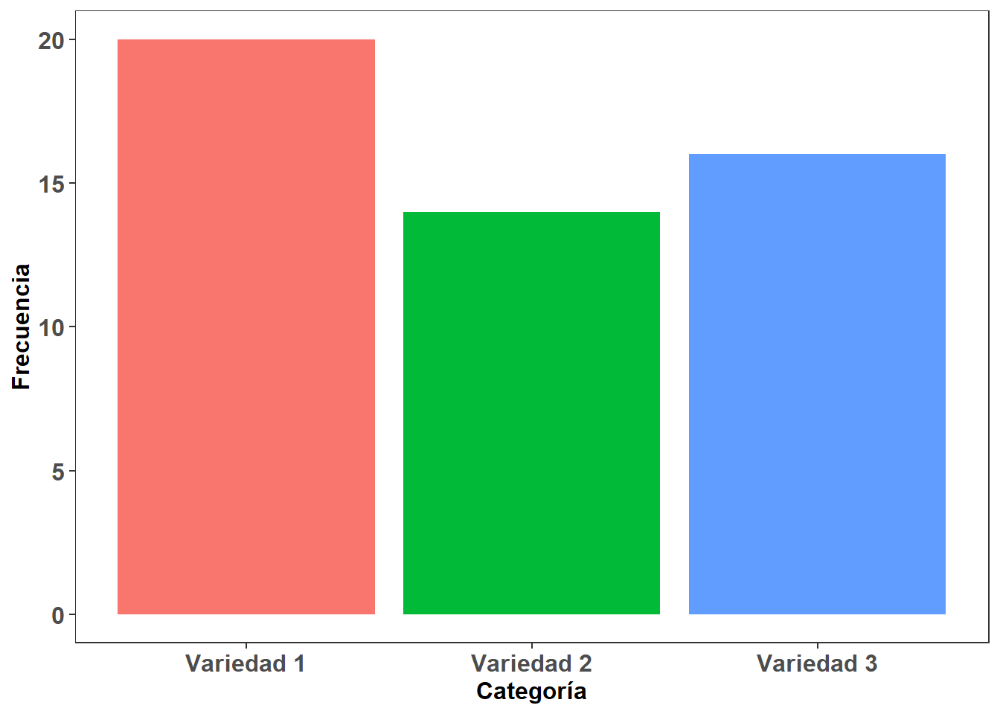
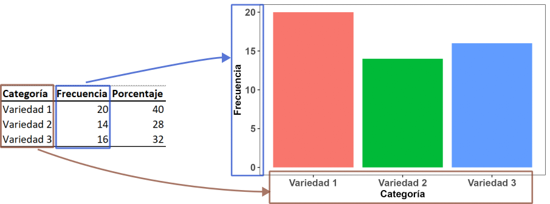
3.2.3.3 Diagrama de barras agrupadas
En un diagrama de barras agrupadas, al igual que en un diagrama de barras, se muestran los conteos para un grupo, pero además se desglosa para una variable adicional. Por ejemplo en la Figura 3.3 se muestran los porcentajes de nitrógeno (N), fósforo (P) y potasio (K) para cuatro variedades diferentes de maíz.
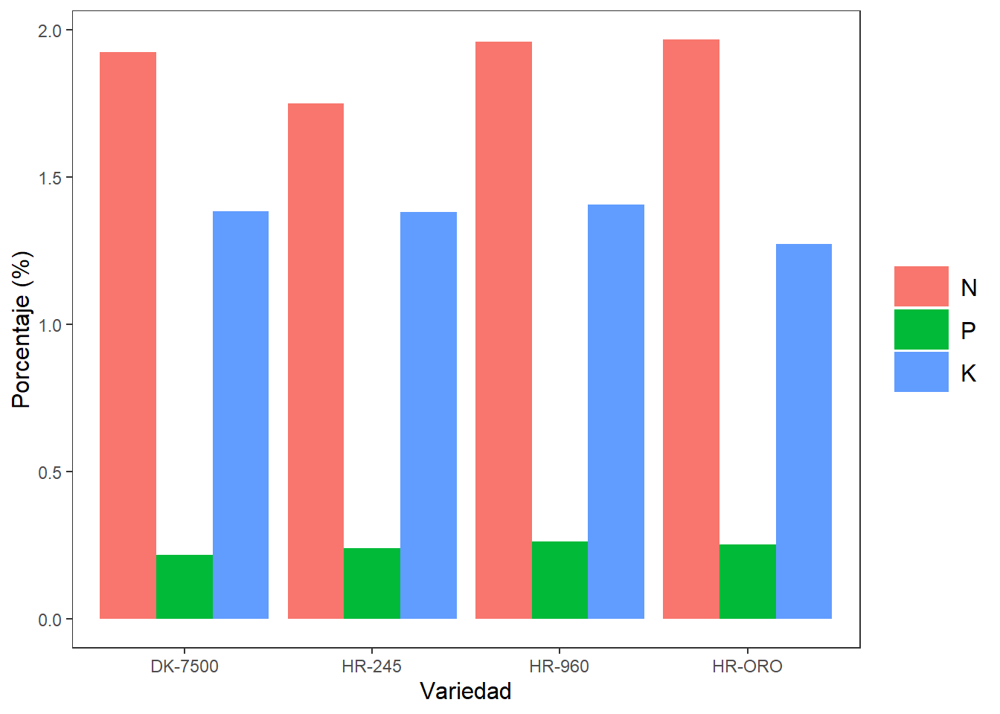
3.2.3.4 Diagrama de barras apiladas
Una variación muy útil de los diagramas de barras son los diagramas de barras apiladas. A diferencia de los diagramas de barras agrupadas en este caso se apilan las barras una sobre otra. Esto es útil cuando las barras suman \(100\%\), o la suma de los porcentajes o frecuencias es constante. En la Figura 3.4 se muestra la relación Humedad, Materia Seca para cuatro variedades de maíz.
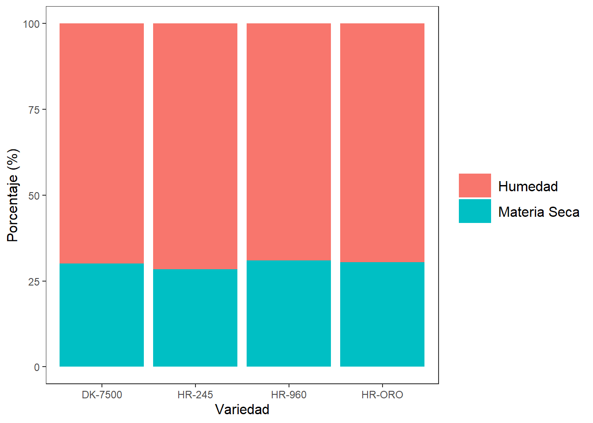
3.2.3.5 Histograma
Un histograma es un gráfico que utiliza barras para representar las frecuencias absolutas o las frecuencias relativas de los posibles resultados de una variable cuantitativa. Con un histograma se puede conocer la forma, el centro y la variabilidad de la distribución. La altura de las barras corresponde a las frecuencias absolutas.
Es importante tener en cuenta que un histograma no debe ser usado para hacer inferencias ya que nos dan una rápida visión de la distribución de los datos y solo sugieren información sobre ciertas características. En la Figura 3.5 se aprecia el histograma de la altura de los girasoles.
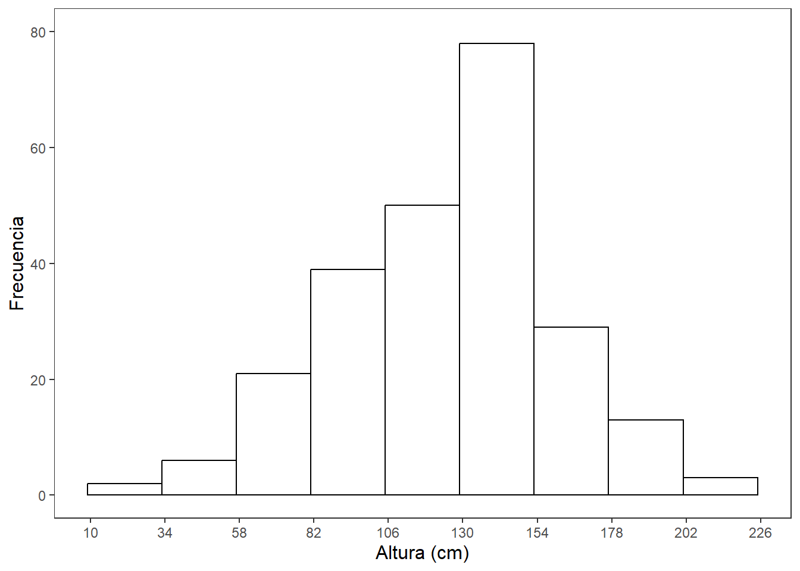
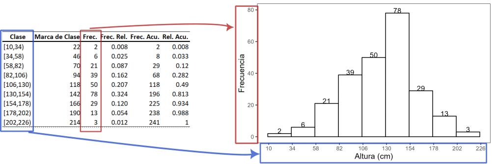
En algunas ocasiones es de interés graficar las frecuencias relativas. El histograma de las frecuencias relativas tiene la misma forma que el histograma de las frecuencias absolutas, pero las alturas ahora corresponden a las frecuencias relativas.
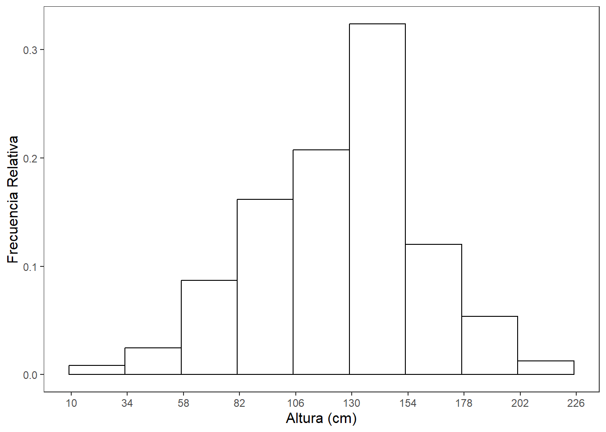
3.2.3.6 Gráficos de densidad
Un gráfico de densidad es una representación de la distribución de una variable numérica. Es una versión suavizada del histograma. Los gráficos de densidad son usados para estudiar la distribución de una variable. Los picos de un gráfico de densidad muestran donde se concentran los valores en el rango de la variable. Una ventaja que tienen los gráficos de densidad sobre los histogramas es que son mejores para determinar la forma de la distribución de los datos porque no se ven afectados por el número de barras usadas.
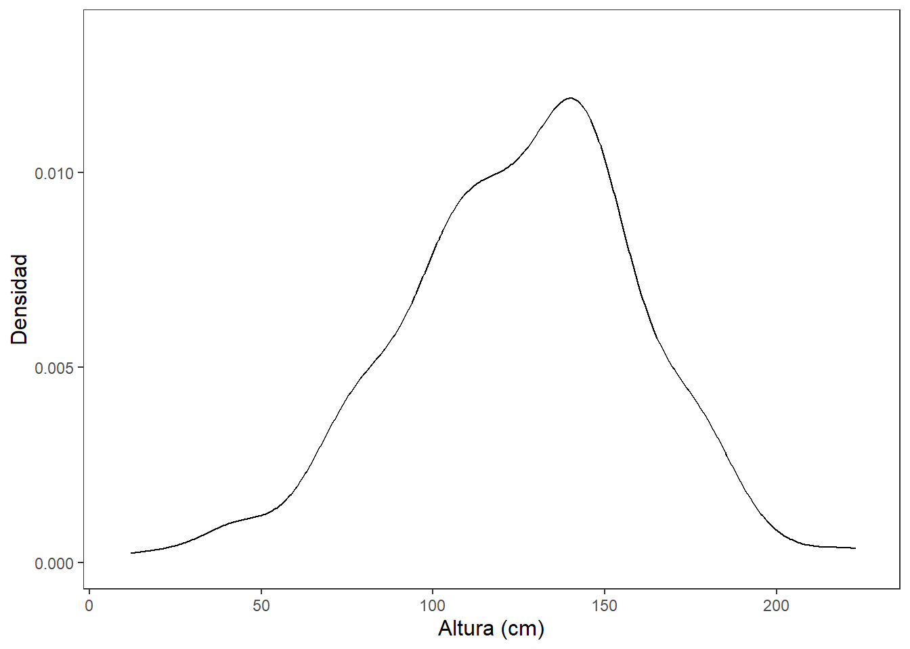
3.2.3.7 Gráfico de violín
Un gráfico de violín es una alternativa al diagrama de caja que combina la información del diagrama de caja con la estimación de densidad. Es útil para comparar distribuciones entre grupos, especialmente cuando las distribuciones son multimodales o asimétricas.
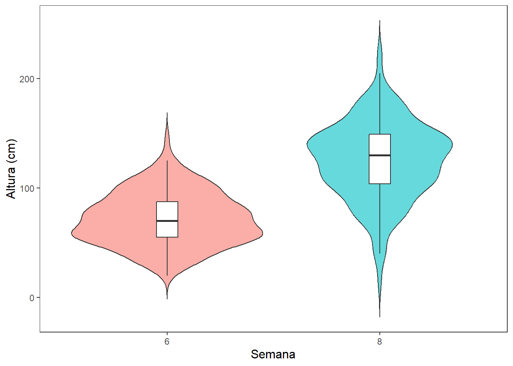
Tip
El gráfico de violín con caja superpuesta (geom_violin() + geom_boxplot()) es una buena práctica porque combina la información de distribución completa con los cuantiles y la mediana.
3.2.3.8 Diagramas de caja
Un diagrama de caja resume los valores numéricos de una variable categórica y ofrece una idea del rango de valores que puede tomar cada categoría. En la Figura 3.10 se muestra el diagrama de caja para la altura de plantas de caña de azúcar que fueron sometidas a 3 tratamientos diferentes de riego y fertilización.
Para la interpretación de un diagrama de caja principalmente hay que fijarse en la línea central de la caja. Este valor corresponde a la mediana; el \(50\%\) de los valores son menores a esta cantidad. Cuando la distribución de los datos es simétrica, la mediana se ubicará justo en el centro de la caja. Los puntos que se ven sobre o bajo la caja son considerados valores atípicos.
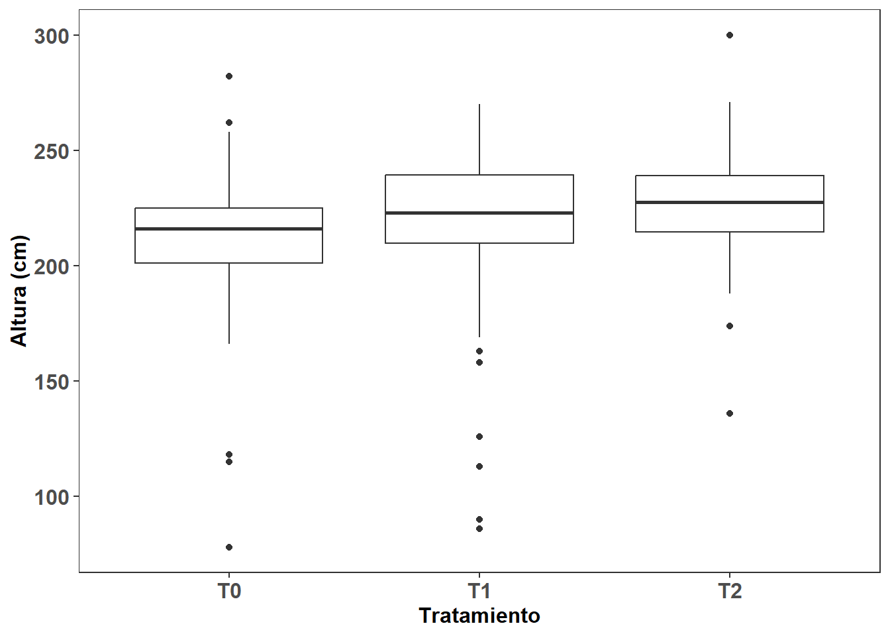
3.2.3.9 Gráficos de líneas
Estos gráficos son útiles para mostrar la tendencia de una variable cuantitativa en el tiempo. En la Figura 3.11 se muestra la evolución de la altura de las plantas de caña separadas por tratamiento.
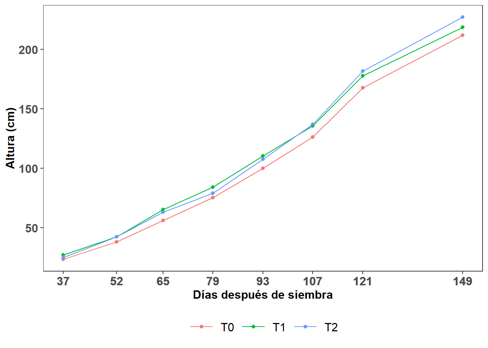
3.2.3.10 Gráfico de dispersión (scatter plot)
El gráfico de dispersión permite visualizar la relación entre dos variables cuantitativas. Es el primer paso antes de realizar un análisis de correlación o regresión.
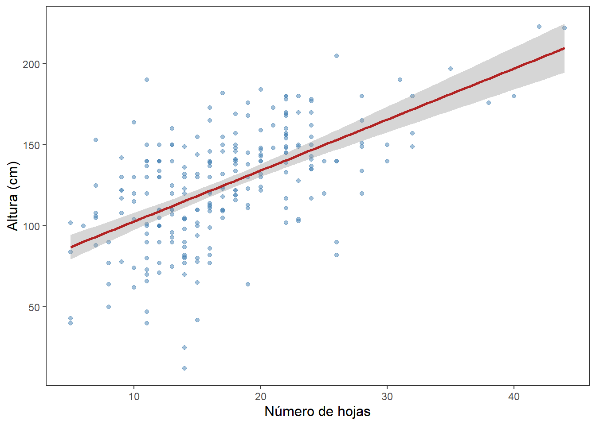
Tip
En ggplot2, geom_smooth(method = "lm") añade la línea de regresión con su intervalo de confianza. Esto es útil para una inspección visual rápida, pero el análisis formal de correlación y regresión se trata en capítulos posteriores.
3.3 Medidas numéricas de resumen
Una medida numérica de resumen es un número único que se calcula a partir de una muestra que transmite una característica específica de toda la muestra. Las medidas numéricas sirven para medir la tendencia central, la dispersión o la posición de los datos.
3.3.1 Medidas de tendencia central
Las medidas de tendencia central indican alrededor de qué valor se centra, agrupa o aglutina la mayoría de datos.
3.3.1.1 Media
Definición 3.1 La media o media aritmética es simplemente el promedio de los valores observados. Para los \(n\) valores de una muestra \(x_1,\,x_2, \ldots,\,x_n\) la media muestral \(\bar{x}\) se define como:
\[ \bar{x}= \dfrac{\sum_{i=1}^nx_i}{n} \tag{3.7}\]
La media poblacional es denotada por la letra griega \(\mu\), en este caso se divide para \(N\) que representa el tamaño poblacional.
\[ \mu = \dfrac{\sum_{i=1}^Nx_i}{N} \tag{3.8}\]
Importante
Propiedades de la media
- Si a todos los valores \(\left\{x_1, x_2, \ldots,x_n \right\}\) de una variable \(x\) con media \(\bar{x}\) se les suma una constante \(k\), la nueva media es \(\bar{x}+k\)
- Si todos los valores de una variable \(x\) con media \(\bar{x}\) se multiplican por una constante \(k\), la nueva media es \(\bar{x}k\)
- Si todos los valores de una variable \(x\) con media \(\bar{x}\) se dividen por una constante \(k\) diferente de \(0\), la nueva media es \(\dfrac{\bar{x}}{k}\)
Tip
Ventajas de la media: fácil de entender y calcular; depende de todos los valores; susceptible de cálculos aritméticos posteriores; no se ve afectada por las fluctuaciones del muestreo.
Desventajas de la media: susceptible a valores extremos; si hay valores perdidos no es posible calcularla (sin na.rm = TRUE); no se usa para variables cualitativas.
3.3.1.2 Media geométrica
Definición 3.2 La media geométrica \(MG\) de un conjunto de \(n\) observaciones \(\left\{x_1, x_2, \ldots,x_n \right\}\) se define como la raíz enésima del producto de todas las observaciones:
\[ MG = \sqrt[n]{x_1 \, x_2\, \ldots \,x_n} = \sqrt[n]{\Pi_{i=1}^{n} x_i} \tag{3.9}\]
Tip
¿Cuándo usar la media aritmética o la media geométrica? La media \(\bar{x}\) es usada en la mayoría de las situaciones. La media geométrica \(GM\) es preferida cuando los cambios en los valores ocurren de forma multiplicativa: razones, tasas de crecimiento, interés compuesto, índices de precios. Es muy útil para construir índices.
3.3.1.3 Media ponderada
En algunas situaciones, no todas las observaciones tienen el mismo peso o importancia. En esos casos se usa la media ponderada:
\[ \bar{x}_w = \dfrac{\sum_{i=1}^n w_i x_i}{\sum_{i=1}^n w_i} \tag{3.10}\]
donde \(w_i\) es el peso o ponderación de la observación \(x_i\).
Ejemplo: el rendimiento promedio ponderado por área cosechada en tres fincas:
rendimiento <- c(3850, 4200, 3600) # kg/ha
area <- c(2.5, 5.0, 1.8) # ha
media_simple <- mean(rendimiento)
media_ponderada <- weighted.mean(rendimiento, w = area)
cat("Media simple: ", round(media_simple, 1), "kg/ha\n")Media simple: 3883.3 kg/hacat("Media ponderada: ", round(media_ponderada, 1), "kg/ha\n")Media ponderada: 3989.8 kg/ha
Tip
La función weighted.mean() de R base permite calcular la media ponderada directamente.
3.3.1.4 Mediana
Definición 3.3 La mediana muestral denotada con \(\tilde{x}\) de \(n\) observaciones \(x_1,\,x_2,\,\ldots,x_n\) es el valor central cuando las observaciones están ordenadas en forma ascendente.
\[ \tilde{x} = \begin{cases} \left \{ X \right\}_{\frac{n+1}{2}} & ; n \quad \textrm{impar} \\ \dfrac{\left \{ X \right \}_{\frac{n}{2}} + \left \{ X \right \}_{\frac{n}{2}+1} }{2} & ; n \quad \textrm{par} \end{cases} \tag{3.11}\]
Tip
Ventajas de la mediana: no se ve afectada por valores extremos; se puede determinar para escalas ordinales.
Desventajas de la mediana: no usa toda la información disponible; las medianas de subconjuntos no se pueden combinar para obtener la mediana del conjunto total.
3.3.1.5 Moda
Definición 3.4 La moda denotada por \(Mo\) es el valor que tiene la mayor frecuencia absoluta. Hay conjuntos de datos que no tienen moda, también existen conjuntos con más de una moda (bimodal, multimodal).
Tip
La moda es la única medida de tendencia central que se puede usar para variables nominales.
3.3.2 ¿Cómo escoger la medida de tendencia central adecuada?
En la mayoría de situaciones se prefiere la media como la medida de tendencia central que se reporta. Sin embargo, se recomienda usar la mediana cuando:
- Hay algunos valores extremos en la distribución.
- Algunas observaciones tienen valores no determinados.
- Los datos se miden en una escala ordinal.
Cuando los datos se encuentran en una escala nominal, se prefiere la moda.
3.3.3 Simetría y sesgo
La forma de una distribución unimodal puede ser simétrica o sesgada. Una distribución es simétrica si hacia la derecha y la izquierda de un valor central tiene la misma forma. Una distribución es sesgada a la derecha si la cola derecha es más larga que la izquierda. Cuando la cola izquierda es más larga que la derecha la distribución es sesgada a la izquierda.
Entre el sesgo y las medidas de tendencia central existen las siguientes relaciones:
- Cuando la distribución es sesgada a la derecha se cumple \(Mo < \tilde{x} < \bar{x}\).
- Cuando la distribución es sesgada a la izquierda se cumple que \(\bar{x} < \tilde{x} < Mo\).
- Cuando la distribución es simétrica se cumple que \(\bar{x} = \tilde{x} = Mo\).
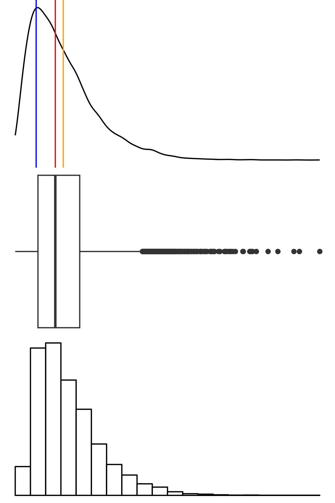
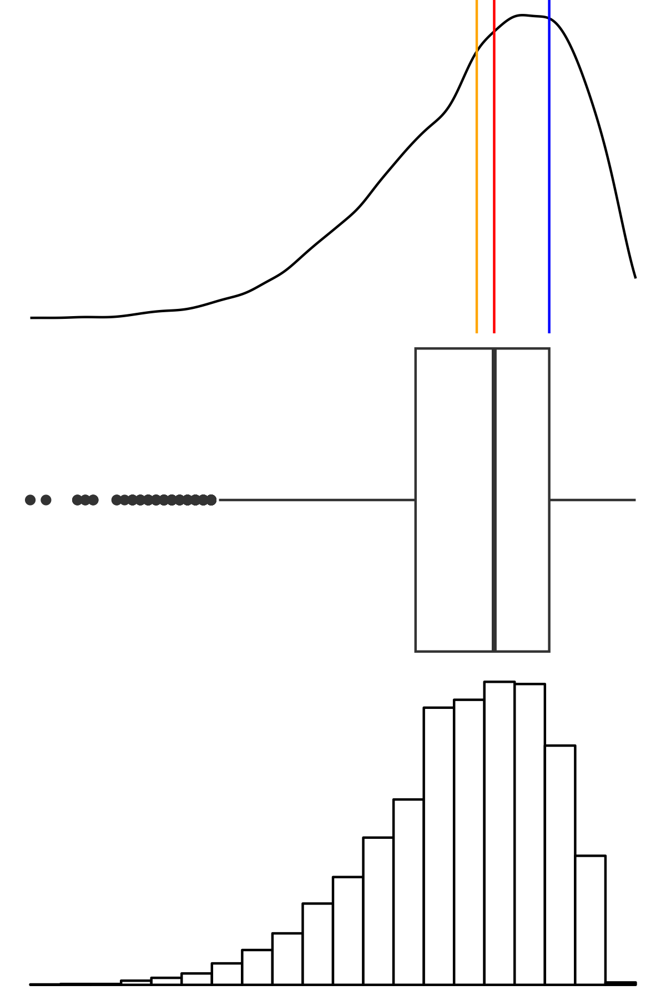
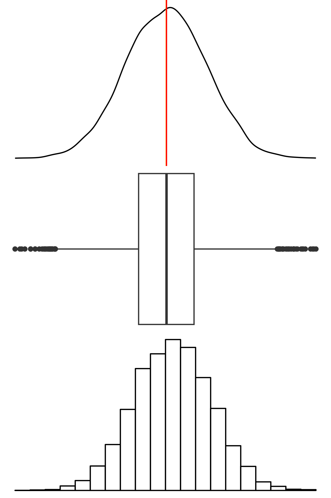
::: {.callout-note icon=false} #### Demo interactiva: Sesgo y medidas de tendencia centralMueve el slider para cambiar el tipo de distribución. Observa cómo se desplazan la moda (🔵), la mediana (🔴) y la media (🟠) y cómo se cumple la relación (Mo < < {x}) (derecha), ({x} = = Mo) (simétrica) o ({x} < < Mo) (izquierda). :::
3.3.3.1 Coeficiente de asimetría (skewness)
La asimetría se puede cuantificar con el coeficiente de asimetría de Pearson (o skewness):
\[ g_1 = \dfrac{\frac{1}{n}\sum_{i=1}^n (x_i - \bar{x})^3}{s^3} \tag{3.12}\]
- Si \(g_1 > 0\): distribución sesgada a la derecha.
- Si \(g_1 < 0\): distribución sesgada a la izquierda.
- Si \(g_1 = 0\): distribución simétrica.
En R se puede calcular con la función Skew() del paquete DescTools:
library(DescTools)
alt_gir <- c(140, 123, 110, 100, 137, 117, 120, 112, 168, 109,
165, 133, 178, 81, 135, 145, 109, 78, 169, 132)
Skew(alt_gir) # coeficiente de asimetría[1] 0.0874679Kurt(alt_gir) # curtosis (aplanamiento)[1] -0.86118883.3.4 Medidas de dispersión
Supongamos que en una empresa distribuidora de agroquímicos se forman dos equipos de ventas, la empresa ofrece un bono al equipo que tiene el mejor desempeño en las ventas mensuales promedio. En la Tabla 3.5 se muestra el mínimo, la media, la mediana, el máximo y el total para las ventas mensuales de ambos equipos.
| Equipo | Mínimo | Media | Mediana | Máximo | Total |
|---|---|---|---|---|---|
| Team1 | 18174.56 | 20000.00 | 19946.35 | 21620.26 | 400000.00 |
| Team2 | 16947.96 | 20000.00 | 20033.14 | 22918.67 | 400000.00 |
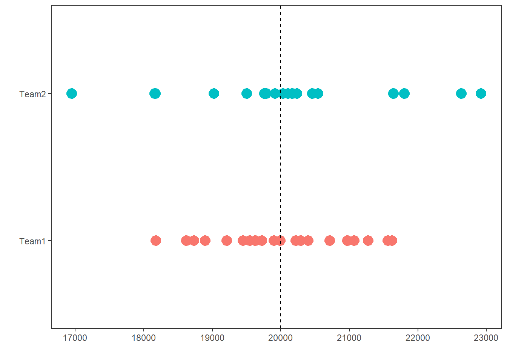
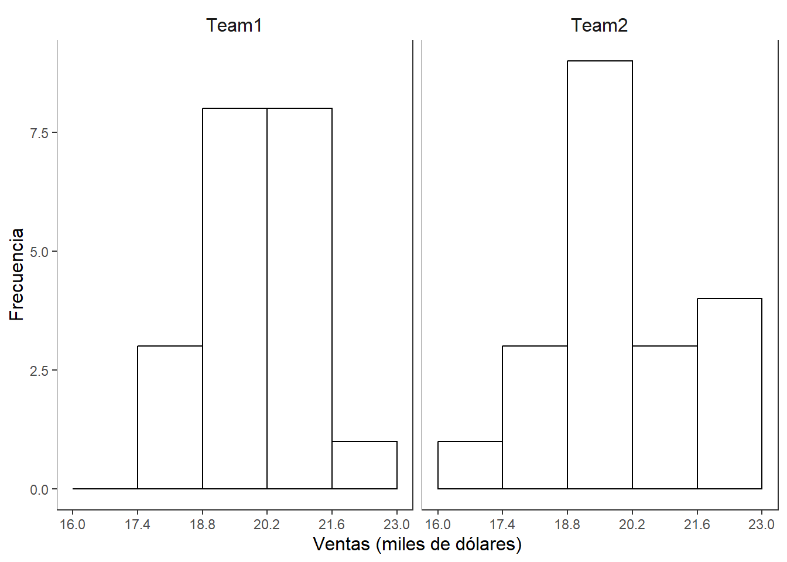
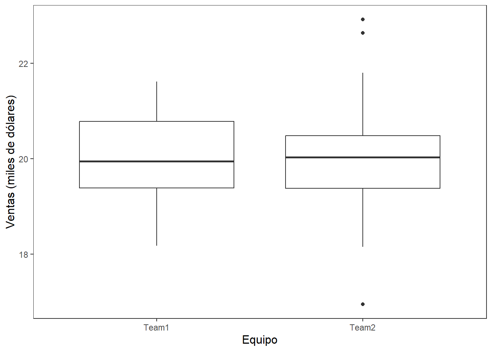
3.3.4.1 Rango
El rango es la medida de dispersión más fácil de calcular:
\[ Rango = \text{Máximo} - \text{Mínimo} \]
3.3.4.2 Varianza poblacional y muestral
Definición 3.5 La varianza poblacional que se denota con \(\sigma^2\) se la calcula como el promedio de las desviaciones cuadráticas respecto a la media:
\[ \sigma^2 = \dfrac{\sum_{i=1}^N(x_i-\mu)^2}{N} \tag{3.13}\]
Definición 3.6 La varianza muestral que se denota con \(s^2\) se la calcula con la expresión:
\[ s^2 = \dfrac{\sum_{i=1}^n(x_i-\bar{x})^2}{n-1} \tag{3.14}\]
3.3.4.3 Desviación estándar poblacional y muestral
Definición 3.7 La desviación estándar es la raíz cuadrada de la varianza. La desviación estándar poblacional se la calcula con:
\[ \sigma = \sqrt{\sigma^2} = \sqrt{\dfrac{\sum_{i=1}^N(x_i-\mu)^2}{N}} \tag{3.15}\]
La desviación estándar muestral:
\[ s = \sqrt{s^2} = \sqrt{\dfrac{\sum_{i=1}^n(x_i-\bar{x})^2}{n-1}} \tag{3.16}\]
3.3.4.4 Coeficiente de variación
El coeficiente de variación (CV) es una medida de dispersión relativa que expresa la desviación estándar como porcentaje de la media:
\[ CV = \dfrac{s}{\bar{x}} \times 100\% \tag{3.17}\]
El CV es especialmente útil para comparar la variabilidad entre variables con diferentes unidades o escalas.
Importante
Interpretación del CV en agronomía (guía general)
| CV (%) | Interpretación |
|---|---|
| < 10% | Muy baja variabilidad |
| 10% – 20% | Variabilidad moderada |
| 20% – 30% | Alta variabilidad |
| > 30% | Muy alta variabilidad |
Esta escala es orientativa; los umbrales pueden variar según el cultivo, la variable y el diseño experimental.
alt_gir <- c(140, 123, 110, 100, 137, 117, 120, 112, 168, 109,
165, 133, 178, 81, 135, 145, 109, 78, 169, 132)
cv <- sd(alt_gir) / mean(alt_gir) * 100
cat("CV:", round(cv, 2), "%\n")CV: 21.77 %| Equipo | Rango | Varianza | Desviación | CV_porc |
|---|---|---|---|---|
| Team1 | 3445.70 | 1000000.00 | 1000 | 5.0 |
| Team2 | 5970.71 | 2250000.00 | 1500 | 7.5 |
3.3.5 Medidas de posición
Las medidas de posición no central permiten conocer otros puntos característicos de la distribución. El término cuantil fue usado por primera vez por Kendall en 1940.
El cuantil de orden \(p\) de una distribución con \(0 < p < 1\) es el valor \(x_{i}\) de la variable \(X\) que marca un corte de modo que una proporción \(p\) o un porcentaje \(100p\)% de valores de la población es menor o igual que \(x_{i}\).
3.3.5.1 Tipos de cuantiles
- Cuartiles: son 3 valores (\(Q_{1}, Q_{2}, Q_{3}\)) que dividen a la distribución en 4 partes iguales.
- Quintiles: son 4 valores (\(K_{1}, K_{2}, K_{3}, K_{4}\)) que dividen a la distribución en 5 partes iguales.
- Deciles: son 9 valores (\(D_1, D_2, \ldots, D_9\)) que dividen a la distribución en 10 partes iguales.
- Percentiles: son 99 valores (\(P_1, P_2, \ldots P_{99}\)) que dividen a la distribución en 100 partes iguales.
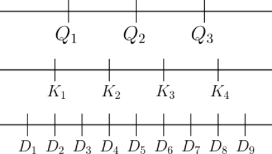
3.3.5.2 Equivalencias importantes entre cuantiles
- \(D_5 = Q_2 = P_{50}\) (mediana)
- \(D_4 = K_2 = P_{40}\)
- \(D_3 = P_{30}\)
3.3.5.3 Cálculo de cuantiles
Para calcular la posición del percentil \(p\) en un conjunto de datos no agrupado de tamaño \(n\) ordenado ascendentemente:
\[ \text{Posición} = p(n-1)+1 \tag{3.18}\]
Para determinar el valor \(X_{i.a}\):
\[ X_{i.a}=X_{i}+0.a(X_{i+1}-X_{i}) \tag{3.19}\]
En R se usan directamente las funciones de la siguiente sección.
3.3.5.4 Relación entre los cuartiles y el diagrama de caja
El rango intercuartílico (\(IQR\)) es igual a la diferencia entre el tercer y primer cuartil:
\[ IQR = Q_3 - Q_1 \tag{3.20}\]
El límite superior (\(LS\)) y el límite inferior (\(LI\)) del diagrama de caja se calculan con:
\[ LS = Q_3 + 1.5 \cdot IQR \tag{3.21}\]
\[ LI = Q_1 - 1.5 \cdot IQR \tag{3.22}\]
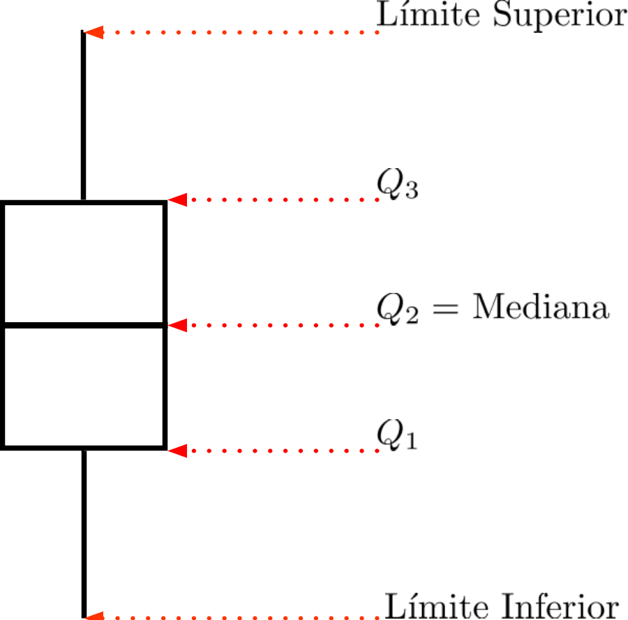
3.3.5.4.1 Valores atípicos
Los valores atípicos son puntos de datos que se sitúan fuera de la mayoría de los datos. Pueden ser muy superiores o inferiores a los de otros puntos e influyen en los resultados del análisis.
Causas frecuentes de valores atípicos: - Errores de digitación o medición. - Fallas en el equipo o procedimiento. - Fenómenos raros pero reales (tormentas, plagas atípicas).
¿Qué hacer con un valor atípico?
- Verificar si es un error de registro o transcripción.
- Si es un error confirmado: corregirlo si se conoce el valor real, o eliminarlo si no es recuperable.
- Si es un valor real pero inusual: reportarlo, analizar con y sin el valor, y usar medidas robustas (mediana, IQR) cuando sea necesario.
Importante
Nunca eliminar un valor atípico sin justificación. La exclusión de datos debe documentarse y justificarse en los métodos del estudio.
3.4 Primeros pasos en RStudio. Elaboración de gráficos y obtención de medidas de resumen.
En el proceso de análisis de datos, adicional a los scripts, la mayoría de ocasiones es necesario tener los datos almacenados en algún directorio de la computadora. Una forma de manejar esto de forma eficiente es trabajando con directorios de trabajo.
Tip
- Para conocer el directorio de trabajo actual se usa la función
getwd(). - Para fijar el directorio de trabajo se usa la función
setwd(dir = "directorio")
3.4.1 Creación de proyectos en RStudio
RStudio tiene una forma más eficiente de manejar los directorios de trabajo, utilizando proyectos. Un proyecto es simplemente un directorio de trabajo designado con un archivo de extensión .Rproj.
Una buena práctica es crear un proyecto en RStudio por cada investigación, tarea o proyecto de análisis. Dentro de la carpeta del proyecto es recomendable tener subcarpetas:
datos: datos que van a ser analizados.graficos: para guardar los gráficos producidos.resultados: para guardar las tablas resultado del análisis.scripts: para guardar todos los scripts.
En este texto se utilizará un solo proyecto al que llamaremos r4agro. En la Figura 3.20 se muestra la estructura de carpetas sugerida.
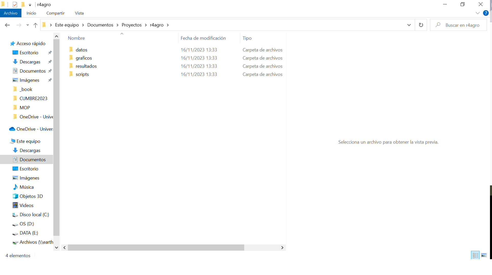
Para crear un proyecto, se debe dar clic en File -> New Project y aparecerá la ventana mostrada en la Figura 3.21.
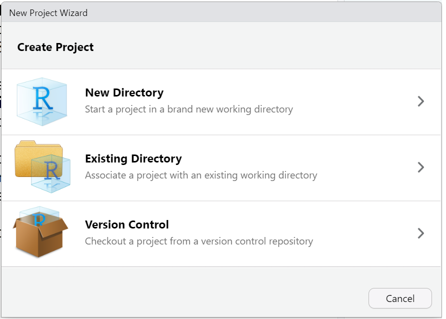
Escogemos la opción de acuerdo a nuestras necesidades:
Tip
- New Directory: para crear un nuevo directorio desde cero (Figura 3.22).
- Existing Directory: si ya existe la carpeta del proyecto (opción que se usará en este libro).
- Version Control: para conectar con Git o Subversion.
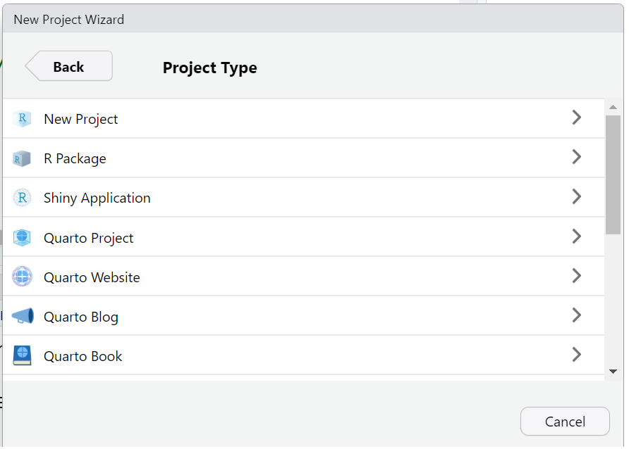
3.4.1.1 Creación de proyectos (Existing Directory)
Tip
File -> New ProjectExisting Directory- Dar clic en
Browse, buscar la carpeta y dar clic enOpen(Figura 3.24). - Escoger
Create New Project(Figura 3.25).
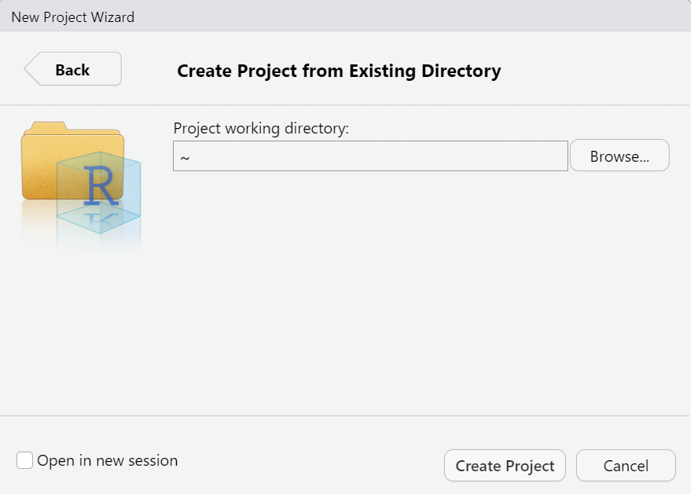
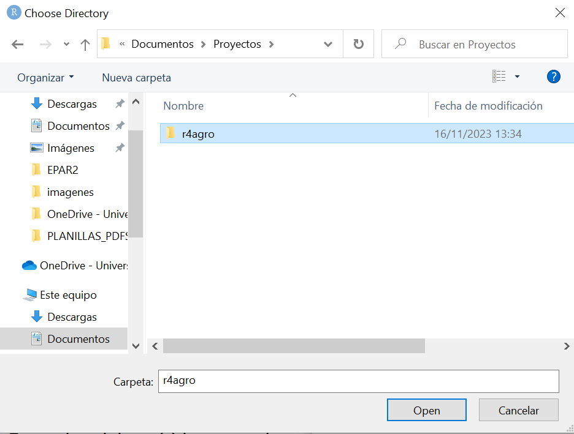
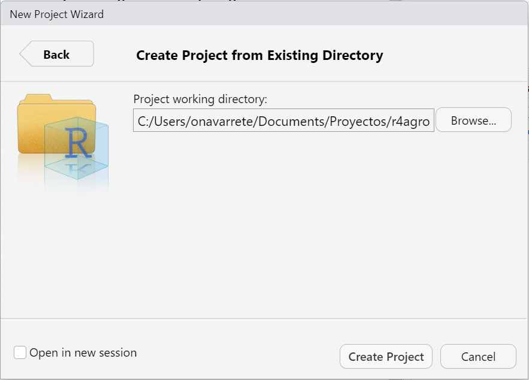
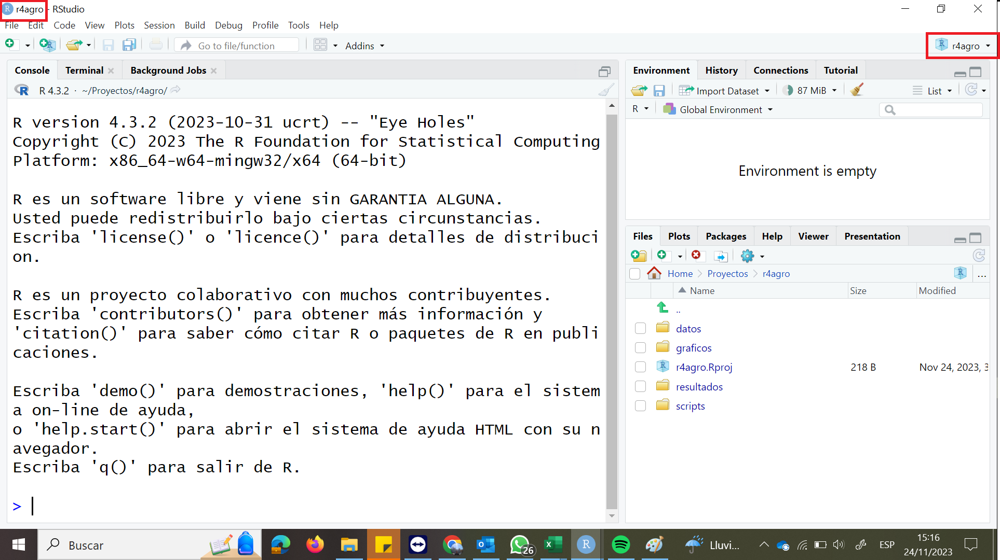
3.5 Creando visualizaciones con ggplot2.
3.5.1 Los datos
En esta sección trabajaremos con el conjunto de datos alt_almacigo.csv, que corresponde a las alturas de 105 plantas de tomate de 5 variedades, 20 días después de la siembra en los almácigos. Las variables presentes en el archivo son:
- Planta: número de planta estudiada.
- Variedad: variedad de la planta.
- DDS: días después de siembra.
- Altura: altura de la planta en centímetros.
- NHV: Número de hojas verdaderas.
3.5.2 Cargar paquetes y leer datos
El primer paso es guardar nuestros datos en la carpeta datos de nuestro proyecto r4agro. Posteriormente creamos un script en la carpeta scripts con el nombre 01_visualizacion.R.
Tip
- Cargar los paquetes necesarios para el análisis.
- Cargar los datos que se van a utilizar.
- Trabajar con los datos: gráficos, análisis o modelos.
library(dplyr)
library(ggplot2)Para leer los datos usamos la función read.csv. El archivo tiene como separador de los valores el punto y coma, y como separador de decimales la coma.
Importante
- Un archivo
csvno necesariamente tiene sus valores separados por coma. - Si los valores están separados por coma, generalmente el separador de decimales es el punto.
- Cuando los valores están separados por punto y coma, el separador de decimales es la coma.
datos <- read.csv("datos/alt_almacigo.csv", sep = ";", dec = ",")
ImportanteEntendiendo el código
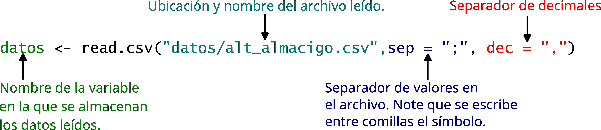
read.csv()
str(datos)'data.frame': 105 obs. of 5 variables:
$ Planta : int 1 2 3 4 5 6 7 8 9 10 ...
$ Variedad: chr "BN" "BN" "BN" "BN" ...
$ DDS : int 20 20 20 20 20 20 20 20 20 20 ...
$ Altura : num 2.3 1.7 3.5 2.6 0.5 2.5 3 2.8 1.7 2.8 ...
$ NHV : num 0 0 1 1 0 2 1 1 0 1 ...glimpse(datos)Rows: 105
Columns: 5
$ Planta <int> 1, 2, 3, 4, 5, 6, 7, 8, 9, 10, 11, 12, 13, 14, 15, 16, 17, 18…
$ Variedad <chr> "BN", "BN", "BN", "BN", "BN", "BN", "BN", "BN", "BN", "BN", "…
$ DDS <int> 20, 20, 20, 20, 20, 20, 20, 20, 20, 20, 20, 20, 20, 20, 20, 2…
$ Altura <dbl> 2.3, 1.7, 3.5, 2.6, 0.5, 2.5, 3.0, 2.8, 1.7, 2.8, 2.4, 3.4, 4…
$ NHV <dbl> 0, 0, 1, 1, 0, 2, 1, 1, 0, 1, 1, 2, 2, 2, 2, 1, 0, 1, 1, 2, 0…
Tip
str()permite ver la estructura interna de un objeto. Pertenece al R base.glimpse()se utiliza para ver las columnas del conjunto de datos y mostrar una parte de los datos que cabe en una sola línea.
El tipo de datos para la variable Variedad que ha sido reconocido como caracter no es el adecuado para análisis posteriores. Se recomienda cambiarla a factor:
datos <- datos |> mutate(Variedad = factor(Variedad))
glimpse(datos)Rows: 105
Columns: 5
$ Planta <int> 1, 2, 3, 4, 5, 6, 7, 8, 9, 10, 11, 12, 13, 14, 15, 16, 17, 18…
$ Variedad <fct> BN, BN, BN, BN, BN, BN, BN, BN, BN, BN, BN, BN, BN, BN, BN, B…
$ DDS <int> 20, 20, 20, 20, 20, 20, 20, 20, 20, 20, 20, 20, 20, 20, 20, 2…
$ Altura <dbl> 2.3, 1.7, 3.5, 2.6, 0.5, 2.5, 3.0, 2.8, 1.7, 2.8, 2.4, 3.4, 4…
$ NHV <dbl> 0, 0, 1, 1, 0, 2, 1, 1, 0, 1, 1, 2, 2, 2, 2, 1, 0, 1, 1, 2, 0…3.5.3 La gramática del paquete ggplot2 para la construcción de gráficos
De manera general la gramática para construir un gráfico es:
ggplot(data = ... , mapping = ...) +
GEOM()Para construir un gráfico se comienza usando la función ggplot(), definiendo el conjunto de datos y las variables a representar. Las variables a ser mapeadas se definen en la función aes().
ggplot(data = datos, mapping = aes(x = Variedad)) 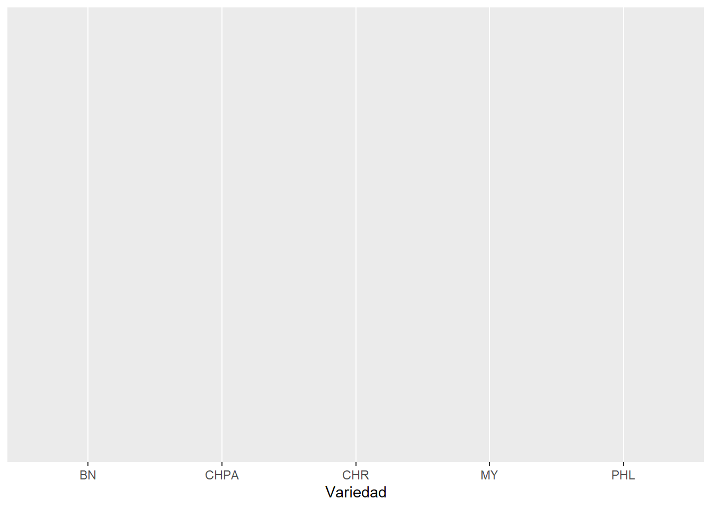
Después de indicar los datos y las variables, indicamos cómo se van a representar con un geom. Para un diagrama de barras usamos geom_bar().
ggplot(data = datos, mapping = aes(x = Variedad)) +
geom_bar() +
ylab("Frecuencia")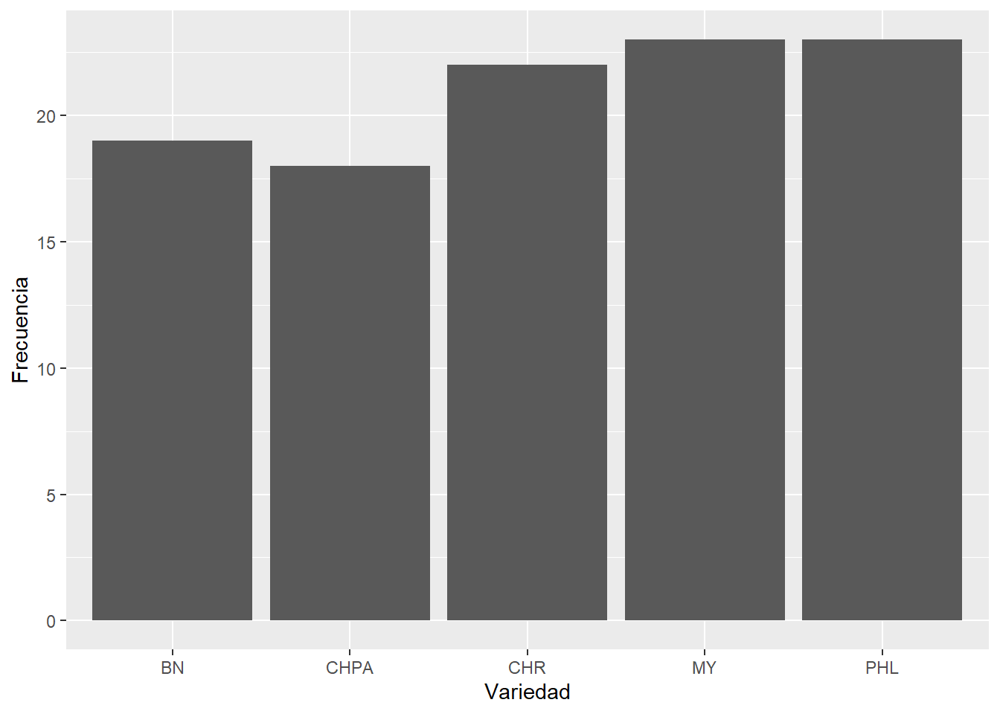
Para añadir color a las barras:
Tip
- El argumento
fillindica el relleno de las barras. - El argumento
colindica el color del borde de las barras.
ggplot(data = datos, mapping = aes(x = Variedad)) +
geom_bar(fill = "lightblue") +
ylab("Frecuencia")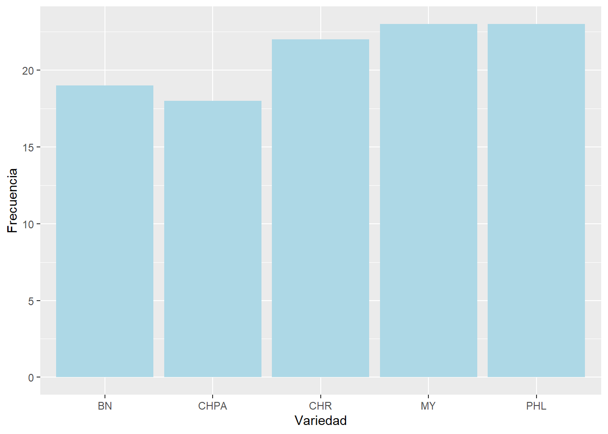
ggplot(data = datos, mapping = aes(x = Variedad, fill = Variedad)) +
geom_bar() +
ylab("Frecuencia")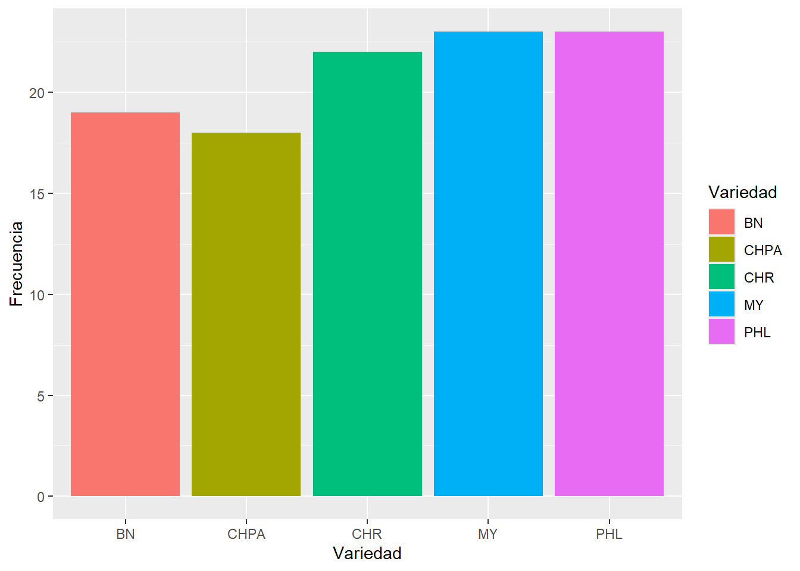
Importante
3.5.4 Diagrama de cajas
En la Sección 3.2.3.8 se explicó qué es un diagrama de cajas. A continuación elaboraremos un diagrama de cajas para la altura por variedad.
ggplot(data = datos, mapping = aes(x = Variedad, y = Altura, fill = Variedad)) +
geom_boxplot() +
ylab("Altura (cm)") +
theme_classic() +
theme(legend.position = "none")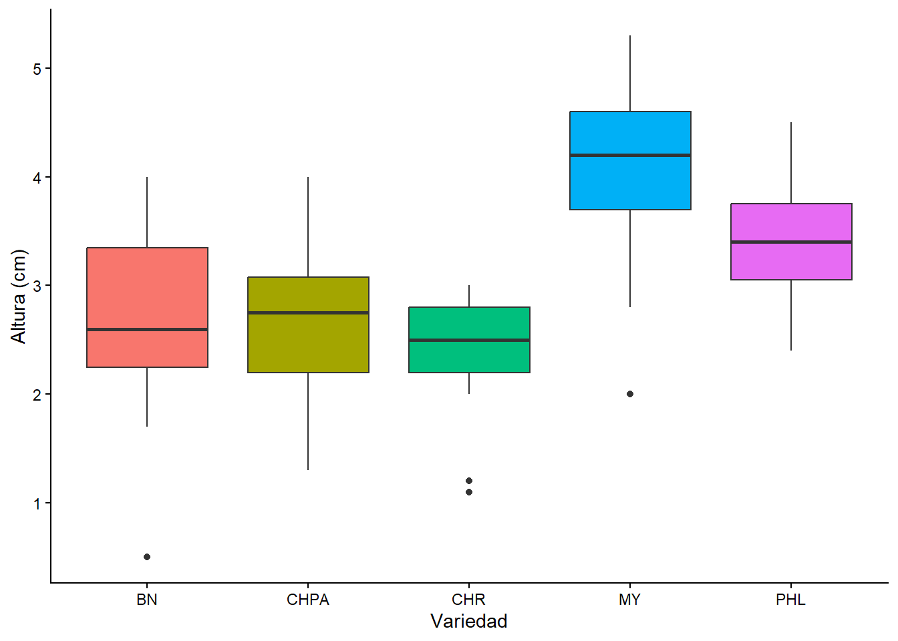
3.5.4.1 Diagrama de cajas con puntos superpuestos
Una mejora frecuente al diagrama de caja es superponer los puntos individuales con geom_jitter(). Esto muestra la distribución real de los datos y el tamaño de cada grupo:
ggplot(data = datos, mapping = aes(x = Variedad, y = Altura, fill = Variedad)) +
geom_boxplot(outlier.shape = NA, alpha = 0.6) + # ocultar outliers del boxplot
geom_jitter(width = 0.15, alpha = 0.4, size = 1.5) +
ylab("Altura (cm)") +
theme_classic() +
theme(legend.position = "none")
Tip
Se recomienda usar outlier.shape = NA en geom_boxplot() cuando se añade geom_jitter(), para evitar mostrar los valores atípicos dos veces.
3.5.5 Histogramas y facetas
El objeto geométrico para un histograma es geom_histogram().
ggplot(data = datos, mapping = aes(x = Altura)) +
geom_histogram(bins = 7, fill = "white", col = "black") +
ylab("Frecuencia")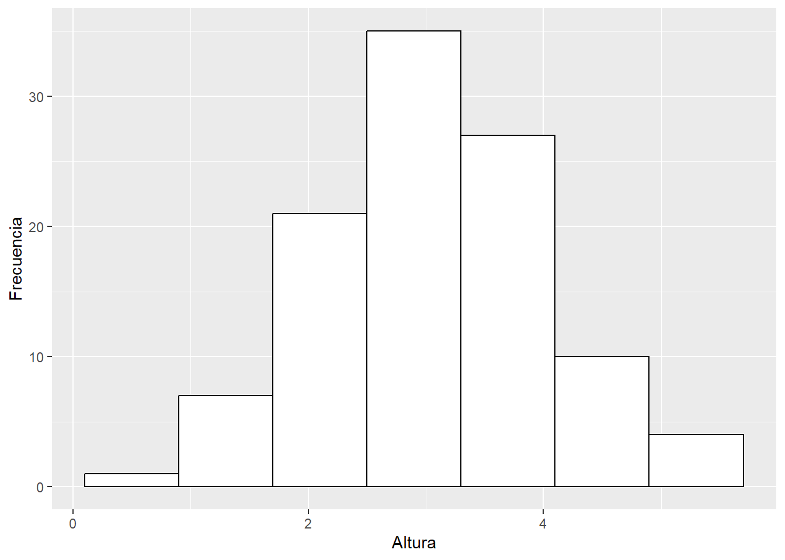
g1 <- ggplot(data = datos, mapping = aes(x = Altura)) +
geom_histogram(bins = 7, fill = "white", col = "black") +
ylab("Frecuencia") +
facet_wrap(~Variedad)
g1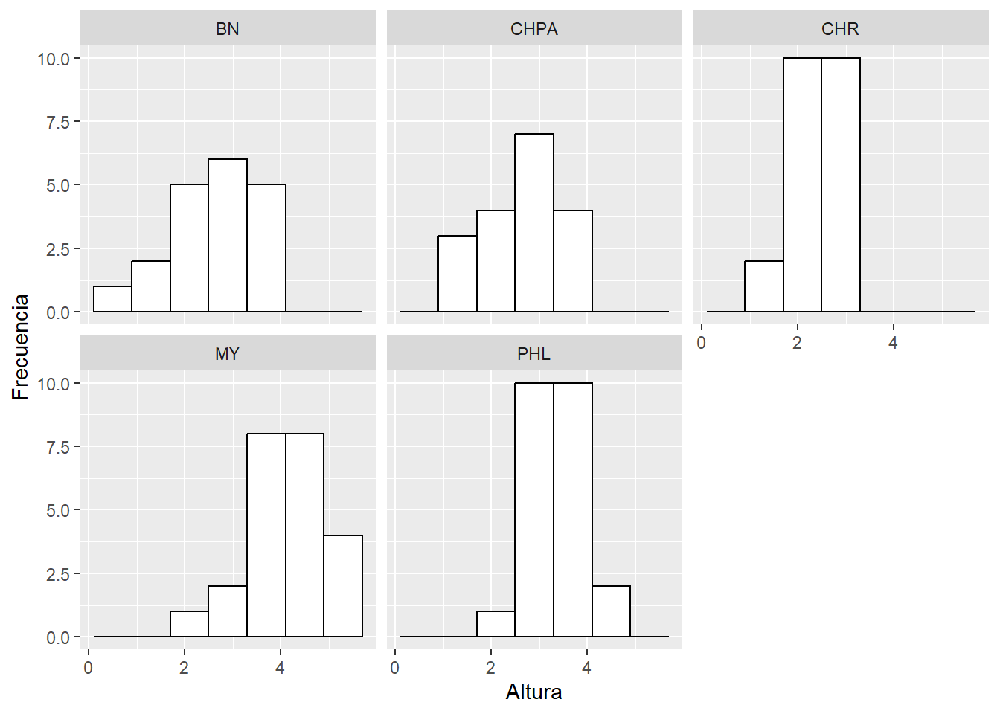
Tip
facet_wrap()es recomendada para separar en subgráficos por una sola variable categórica.facet_grid()es recomendada cuando se desea separar por dos variables categóricas.
ggsave("graficos/hist_alt_fac.png", g1, width = 10, height = 6)
ImportanteCómo guardar un gráfico desde R con
ggplot2
- Para guardar un gráfico usamos la función
ggsave() - Forma básica:
ggsave(nombre_del_archivo, gráfico, width = ancho, height = altura, units = unidades) - Por defecto las unidades son pulgadas.
3.6 Cálculo de medidas numéricas de resumen.
3.6.1 Ingresando los datos (pequeños conjuntos de datos).
El ingeniero Yorky Gil, con la finalidad de elaborar la curva fenológica para el cultivo de girasol en condiciones del trópico húmedo, realizó una siembra de girasoles. En la Tabla 3.7 se muestran las alturas de 20 observaciones de la semana 8.
| 140 | 123 | 110 | 100 | 137 |
| 117 | 120 | 112 | 168 | 109 |
| 165 | 133 | 178 | 81 | 135 |
| 145 | 109 | 78 | 169 | 132 |
alt_gir <- c(140, 123, 110, 100, 137, 117, 120, 112, 168, 109,
165, 133, 178, 81, 135, 145, 109, 78, 169, 132)mean(alt_gir)[1] 128.05median(alt_gir)[1] 127.5sd(alt_gir)[1] 27.8709max(alt_gir) - min(alt_gir) # rango[1] 100quantile(alt_gir, 0.25) # Q1 25%
109.75 quantile(alt_gir, c(0.25, 0.50, 0.75)) # cuartiles 25% 50% 75%
109.75 127.50 141.25 quantile(alt_gir, seq(from = 0.10, to = 0.90, by = 0.10)) # deciles 10% 20% 30% 40% 50% 60% 70% 80% 90%
98.1 109.0 111.4 118.8 127.5 133.8 137.9 149.0 168.1 3.6.2 Resumen completo con summary() y DescTools
Para obtener un resumen estadístico completo con un solo comando:
summary(alt_gir) Min. 1st Qu. Median Mean 3rd Qu. Max.
78.0 109.8 127.5 128.1 141.2 178.0 Con el paquete DescTools es posible obtener un resumen más completo incluyendo asimetría, curtosis y el coeficiente de variación:
library(DescTools)
Desc(alt_gir, plotit = FALSE)──────────────────────────────────────────────────────────────────────────────
alt_gir (numeric)
length n NAs unique 0s mean meanCI'
20 20 0 19 0 128.05 115.01
100.0% 0.0% 0.0% 141.09
.05 .10 .25 median .75 .90 .95
80.85 98.10 109.75 127.50 141.25 168.10 169.45
range sd vcoef mad IQR skew kurt
100.00 27.87 0.22 25.95 31.50 0.09 -0.86
lowest : 78.0, 81.0, 100.0, 109.0 (2), 110.0
highest: 145.0, 165.0, 168.0, 169.0, 178.0
' 95%-CI (classic)3.6.3 Leyendo los datos desde un archivo en Excel, usando el pipe (|>) (grandes conjuntos de datos).
En la Sección 3.5.2, aprendimos a leer datos que se encuentran en un archivo .csv. Ahora trabajaremos con datos que se encuentran disponibles en un libro de Excel. El archivo se llama alt_transp.xlsx y la información está en la hoja de cálculo llamada transplante.
library(dplyr)
library(ggplot2)
library(readxl)
library(writexl)transplante <- read_excel("datos/alt_transp.xlsx", sheet = "transplante")
glimpse(transplante)Rows: 700
Columns: 5
$ Planta <dbl> 1, 2, 3, 4, 5, 6, 7, 8, 9, 10, 11, 12, 13, 14, 15, 16, 17,…
$ Fecha_med <dttm> 2023-06-02, 2023-06-02, 2023-06-02, 2023-06-02, 2023-06-0…
$ Fecha_trans <dttm> 2023-05-27, 2023-05-27, 2023-05-27, 2023-05-27, 2023-05-2…
$ Variedad <chr> "CHR", "CHPA", "MY", "BN", "PHL", "MY", "CHR", "PHL", "BN"…
$ Altura <dbl> 7.0, 6.4, 8.0, 5.8, 6.5, 7.3, 6.0, 6.5, 6.0, 7.5, 7.0, 7.0…
ImportanteEntendiendo el código
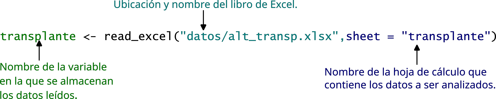
read_excel()
transplante |>
group_by(Variedad, Fecha_med) |>
summarise(
Media = mean(Altura),
Desv = sd(Altura),
.groups = "drop"
)# A tibble: 35 × 4
Variedad Fecha_med Media Desv
<chr> <dttm> <dbl> <dbl>
1 BN 2023-06-02 00:00:00 6.25 2.05
2 BN 2023-06-09 00:00:00 7.98 2.63
3 BN 2023-06-16 00:00:00 11.1 3.43
4 BN 2023-06-23 00:00:00 17.7 5.49
5 BN 2023-06-30 00:00:00 28.6 6.99
6 BN 2023-07-07 00:00:00 43.7 13.2
7 BN 2023-07-26 00:00:00 105. 30.3
8 CHPA 2023-06-02 00:00:00 7.54 2.09
9 CHPA 2023-06-09 00:00:00 10.6 1.82
10 CHPA 2023-06-16 00:00:00 14 2.47
# ℹ 25 more rows
ImportanteEntendiendo el código
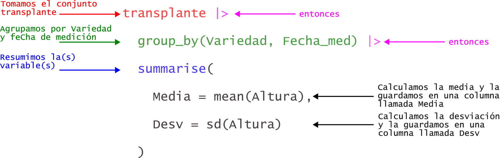
dplyr
tbl_alt_var_fec <- transplante |>
group_by(Variedad, Fecha_med) |>
summarise(
Media = mean(Altura),
Desv = sd(Altura),
.groups = "drop"
)transplante <- transplante |>
mutate(DDT = as.numeric(Fecha_med - Fecha_trans))
Importante
- El código empieza con
transplante <-, porque el resultado se va a almacenar en el mismo objeto. - El resultado de
Fecha_med - Fecha_transcontiene las unidades de tiempo (días), razón por la que se utilizaas.numeric()para almacenar solo el número.
tbl_alt_var_ddt <- transplante |>
group_by(Variedad, DDT) |>
summarise(
Media = mean(Altura),
Desv = sd(Altura),
.groups = "drop"
)| Variedad | DDT | Media | Desv |
|---|---|---|---|
| BN | 6 | 6.25 | 2.05 |
| BN | 13 | 7.97 | 2.63 |
| BN | 20 | 11.07 | 3.43 |
| BN | 27 | 17.70 | 5.49 |
| BN | 34 | 28.60 | 6.99 |
| BN | 41 | 43.70 | 13.24 |
| BN | 60 | 104.95 | 30.31 |
| CHPA | 6 | 7.54 | 2.09 |
| CHPA | 13 | 10.63 | 1.82 |
| CHPA | 20 | 14.00 | 2.47 |
| CHPA | 27 | 22.80 | 4.03 |
| CHPA | 34 | 40.80 | 9.88 |
| CHPA | 41 | 60.45 | 8.11 |
| CHPA | 60 | 129.65 | 31.18 |
| CHR | 6 | 6.98 | 1.11 |
| CHR | 13 | 9.43 | 1.48 |
| CHR | 20 | 13.39 | 2.24 |
| CHR | 27 | 23.58 | 4.52 |
| CHR | 34 | 43.05 | 7.03 |
| CHR | 41 | 63.80 | 11.27 |
| CHR | 60 | 133.20 | 37.42 |
| MY | 6 | 8.68 | 1.22 |
| MY | 13 | 10.97 | 1.80 |
| MY | 20 | 15.18 | 2.27 |
| MY | 27 | 24.50 | 4.33 |
| MY | 34 | 38.05 | 6.64 |
| MY | 41 | 50.65 | 8.06 |
| MY | 60 | 85.45 | 22.88 |
| PHL | 6 | 7.29 | 1.08 |
| PHL | 13 | 9.57 | 1.92 |
| PHL | 20 | 13.28 | 2.90 |
| PHL | 27 | 19.85 | 4.33 |
| PHL | 34 | 33.35 | 7.95 |
| PHL | 41 | 45.40 | 10.58 |
| PHL | 60 | 83.70 | 15.70 |
write_xlsx(x = tbl_alt_var_ddt, "resultados/tabla1.xlsx")3.6.4 Exportar tablas a Word y PDF
Además de Excel, en investigación es frecuente necesitar tablas formateadas para documentos Word o PDF. El paquete knitr con la función kable() ya lo hemos usado. Para tablas más elaboradas en documentos Quarto se puede usar el paquete gt:
library(gt)
tbl_alt_var_ddt |>
gt() |>
tab_header(
title = "Medidas de resumen por variedad y DDT",
subtitle = "Altura de plantas de tomate"
) |>
fmt_number(columns = c(Media, Desv), decimals = 2)3.7 Bono: Haciendo un gráfico de líneas
En la Sección 3.2.3.9 se presentaron los gráficos de líneas. Para construir un gráfico de líneas debemos tener los datos resumidos como en la Tabla 3.8.
ddts <- unique(tbl_alt_var_ddt$DDT)
g2 <- ggplot(tbl_alt_var_ddt, aes(x = DDT, y = Media)) +
geom_point(aes(col = Variedad)) +
geom_line(aes(col = Variedad)) +
labs(
x = "Días después de transplante",
y = "Altura (cm)"
) +
scale_x_continuous(breaks = ddts)
g2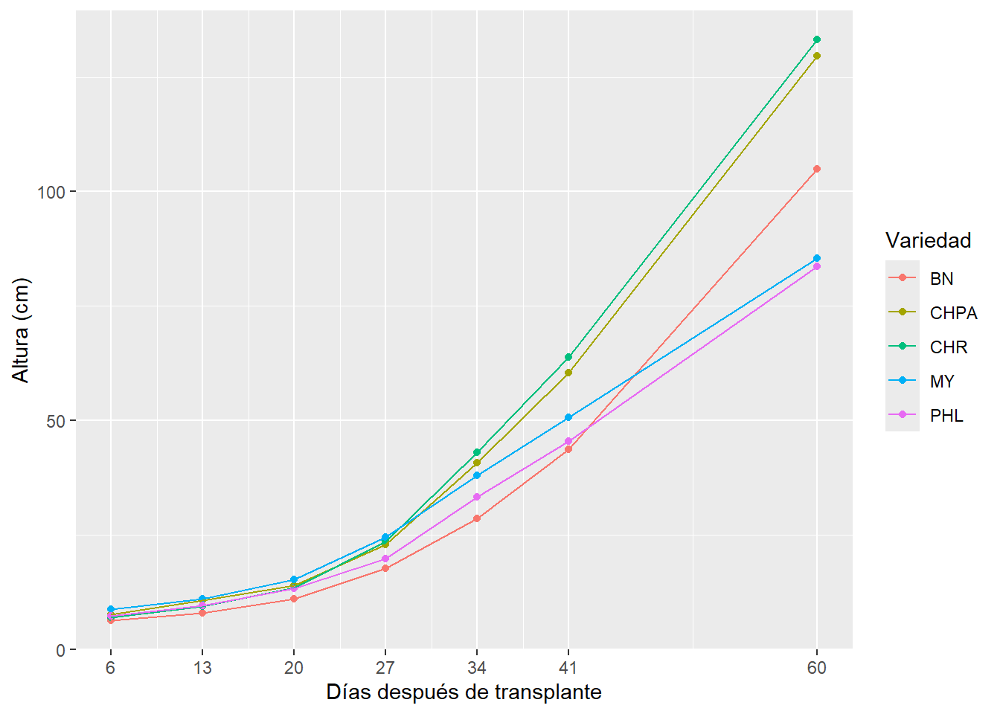
3.7.1 Añadir barras de error al gráfico de líneas
En investigación agronómica es práctica común mostrar las barras de error (desviación estándar o error estándar) en los gráficos de líneas. En ggplot2 esto se logra con geom_errorbar():
g3 <- ggplot(tbl_alt_var_ddt, aes(x = DDT, y = Media, color = Variedad)) +
geom_line() +
geom_point() +
geom_errorbar(
aes(ymin = Media - Desv, ymax = Media + Desv),
width = 1.5,
alpha = 0.6
) +
labs(
x = "Días después de transplante",
y = "Altura (cm)",
title = "Evolución de la altura ± desviación estándar"
) +
scale_x_continuous(breaks = ddts) +
theme_classic()
g3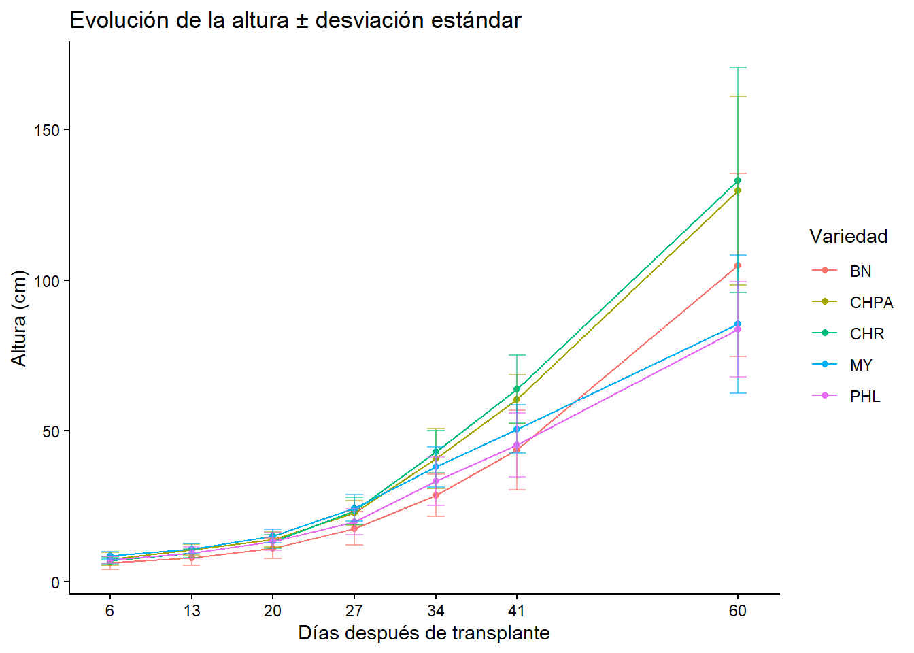
Tip
Las barras de error con desviación estándar muestran la variabilidad de los datos. Si el objetivo es mostrar la precisión del estimado de la media, se usan barras de error estándar (\(SE = s/\sqrt{n}\)). Siempre indicar en la figura cuál se está usando.
Ejercicios
Ejercicio 3.1 ¿Qué gráfico usarías?
Quieres comparar la frecuencia de 6 variedades de frijol (categorías).
Quieres ver la forma de la distribución del peso (g) de 200 frutos (numérica continua).
Quieres comparar la distribución de altura (cm) entre 4 tratamientos.
Quieres ver la relación entre el área foliar y el rendimiento de 50 plantas.
Quieres mostrar la evolución del rendimiento promedio a lo largo de 6 semanas para 3 tratamientos.
Ejercicio 3.2 Medidas de tendencia y dispersión
Si existen valores atípicos muy grandes, ¿qué medida suele ser más robusta?
La desviación estándar se interpreta en las mismas unidades que la variable.
El rango intercuartílico (IQR) es:
Un CV de 45% en el peso de frutos de cacao entre parcelas indica:
La media ponderada difiere de la media simple cuando:
Ejercicio 3.3 En la Tabla 3.9 se muestran los datos de la altura de 40 girasoles. Se pide:
| 134 | 140 | 120 | 103 | 140 | 140 | 109 | 111 | 130 | 135 |
| 149 | 157 | 100 | 114 | 169 | 180 | 140 | 110 | 110 | 130 |
| 110 | 160 | 140 | 140 | 143 | 110 | 110 | 110 | 122 | 84 |
| 77 | 140 | 140 | 90 | 102 | 108 | 95 | 125 | 100 | 47 |
- Determinar la media y la mediana.
- Determinar el rango, la varianza muestral, la desviación muestral y el coeficiente de variación.
- Determinar los 3 cuartiles.
- Determinar el valor menor al 10% de los datos.
- Determinar el valor mayor al 37% de los datos.
- Calcular el coeficiente de asimetría e interpretar la forma de la distribución.
Ejercicio 3.4 En la Tabla 3.10 se muestran los datos del número de hojas de 40 girasoles. Se pide:
| 28 | 26 | 28 | 23 | 30 | 30 | 16 | 22 | 20 | 24 |
| 32 | 18 | 12 | 16 | 18 | 22 | 25 | 13 | 13 | 12 |
| 12 | 22 | 26 | 20 | 20 | 17 | 17 | 17 | 9 | 5 |
| 14 | 12 | 12 | 8 | 5 | 9 | 11 | 7 | 12 | 11 |
- Determinar las medidas de tendencia central.
- Determinar el rango, la varianza muestral, la desviación muestral y el CV.
- Determinar los 4 quintiles.
- Determinar el valor que es mayor que el 68% de los datos.
- Determinar el valor menor al 25% de los datos.
- Comparar el CV de la altura (ejercicio anterior) con el CV del número de hojas. ¿Cuál variable tiene mayor variabilidad relativa?
Ejercicio 3.5 Con los datos de la Tabla 3.11, determine:
| 20 | 18 | 9 | 15 | 23 |
| 18 | 9 | 21 | 24 | 13 |
| 22 | 28 | 11 | 11 | 19 |
| 20 | 25 | 24 | 32 | 11 |
- Los tres cuartiles
- Los deciles 2, 4, 5, 7 y 9
- Los quintiles 1 y 4.
- Los percentiles 33, 47, 65 y 89
Ejercicio 3.6 El Pepino Africano (Cucumis metuliferus) pertenece a la familia Cucurbitácea y tiene potencial comercial y nutricional. En la Tabla 3.12 se presentan los datos de las alturas de las plantas estudiadas 32 días posteriores al transplante.
| 245 | 214 | 239 | 192 | 215 | 261 |
| 247 | 212 | 177 | 239 | 255 | 249 |
| 221 | 194 | 279 | 196 | 204 | 251 |
| 225 | 245 | 193 | 182 | 239 | 210 |
| 189 | 241 | 257 | 224 | 217 | 231 |
- La media, mediana y moda
- Las medidas de dispersión (rango, varianza, desviación, CV)
- Los 3 cuartiles.
- Los 9 deciles.
- Los percentiles 23, 47, 58, 63 y 99.
- El valor menor al 67% de los datos.
- El valor mayor al 48% de los datos.
- El coeficiente de asimetría e interpretación.
- Construir un histograma y un diagrama de caja en R. Comentar si existen valores atípicos.
Ejercicio 3.7 Para este ejercicio se trabajará con el conjunto de datos girasoles.csv. Se recomienda crear un proyecto llamado Practica01. Puede revisar la Sección 3.4.1 para revisar los pasos para crear un proyecto. Recuerde que el archivo girasoles.csv debe ser guardado en la carpeta datos del proyecto.
- Crear un script y guardarlo en la carpeta correspondiente con el nombre 01girasoles.R
- Cargar los paquetes tidyverse, readxl y writexl
- ¿Cuántas variables tiene el conjunto de datos?
- ¿Cuántas observaciones tiene el conjunto de datos?
- ¿Cuál es el tipo de dato de cada variable?
- ¿Es conveniente el tipo de dato asignado automaticámente para cada variable? En los próximos capítulos aprenderemos a transformar los tipos de datos de acuerdo a las necesidades del investigador.
- Calcule por semana la media, la mediana, el rango, la varianza, la desviación y los 3 cuartiles de la altura de las plantas.
- Calcule por semana la media, la mediana, el rango, la varianza, la desviación y los 3 cuartiles del número de hojas de las plantas.
- Elabore un histograma para la altura de las plantas. Tome en cuenta que es ideal graficar los datos por semana.
- Elabore un histograma para la altura de las plantas. Grafique ahora por semana y por fila.
- Elabore un histograma para el número de hojas de las plantas. Tome en cuenta que es ideal separar los datos por semana.
- Elabore un histograma para el número de hojas de las plantas. Grafique ahora por semana y por fila.
- Utilizando diagramas de caja compare la altura por semana.
- Utilizando diagramas de caja compare la altura por semana y por fila.
- Utilizando diagramas de caja compare el número de hojas por semana.
- Utilizando diagramas de caja compare el número de hojas por semana y por fila.
Ejercicio 3.8 En el conjunto de datos fenologia_camote.xlsx se presentan datos de un experimento realizado en una plantación de camote en la que se aplicaron 4 tratamientos, dentro de la plantación se escogieron puntos de evaluación y en cada punto se aplicó cada tratamiento a determinado número de tubérculos. Al final a cada tubérculo se le midió el peso en gramos, el grosor en milímetros y la longitud de la guía en centímetros. Utilizando Rstudio realice el análisis estadístico descriptivo de los datos, con medidas de resumen, gráficos y tablas adecuados. Sugerencias: puede resolver este ejercicio en el mismo proyecto creado en el Ejercicio 3.7, además es conveniente crear un nuevo script.
Ejercicio 3.9 El cacao (Theobroma cacao L.) es una fruta de origen tropical utilizada como materia prima en la industria del chocolate. El proyecto desarrolado por Paula Reyes y Osvin Aldana tuvo como objetivo caracterizar fenotípica y genotípicamente 19 accesiones de cacao (Theobroma cacao L.), ubicadas en el Banco de Germoplasma de la Universidad EARTH, además evaluar la susceptibilidad, tolerancia o resistencia a las enfermedades moniliasis (Moniliophthora roreri Cif y Par) y mazorca negra (Phytophthora palmivora Bult), y comprobar la efectividad del protocolo de extracción de ADN genómico utilizando buffer CTAB en muestras foliares de cacao. Los resultados de la caracterización fenotípica dieron a conocer una alta variabilidad entre las accesiones formando agrupaciones en cada descriptor evaluado. En el archivo baseEX2G1.xlsx se almacenan los datos de 4 de las 19 accesiones. En la tabla Tabla 3.13 se muestran los descriptores de la variable, junto con el nombre de la variable y su respectiva descripción.
| Descriptores generales y botánicos | Nombre Variable | Descripción |
|---|---|---|
| Longitud de lámina foliar (L) | Longitud | Haciendo uso de una regla se midió desde la base de lámina foliar hasta el ápice de la hoja. La medida se expresó en centímetros. |
| Ancho de lámina foliar | Ancho | Haciendo uso de una regla se midió en el punto más ancho. La medida se expresó en centímetros. |
| Longitud desde la base hasta el punto más ancho | LBA | Se determinó usando una regla y se tomó desde la base hasta el punto más ancho de la hoja. La medida se expresó en centímetros. |
| Relación largo-ancho | RLA | Se determinó con la división de la longitud de la lámina foliar entre el ancho de la lámina foliar. La medida se expresó en centímetros. |
| Forma de la hoja | FORMA | Se determinó calculado la relación entre la longitud de la lámina foliar (L) y la longitud de la hoja desde la base hasta la parte más ancha de la misma (LBA). Según el resultado se clasifica en los siguientes criterios: L/LBA <2: ovalada L/LBA =2: elíptica L/LBA >2: oblonga |
| Forma de la base | Base | Se evaluó de forma visual, clasificándolas de la siguiente manera: 1. aguda, 2. redondeada, 3. cordiforme y 4. obtusa. |
| Forma del ápice | Apice | Se evaluó de forma visual, clasificándolas de la siguiente manera: 1. agudo, 2. acuminado corto y 3. acuminado largo. |
| Accesión | Accesion | Contiene el código asignado a las accesiones. |
| Nombre Accesión | grupos | Contiene el nombre de las accesiones |
- Crear un proyecto llamado PG_PO.
- Crear un script llamado hojas.R.
- Cargar los paquetes tidyverse, writexl y readxl.
- Cargar los datos almacenados en el archivo de Excel, los datos deben ser guardados en una variable llamada fenohojas
- Identificar cuántas variables y cuántas observaciones tiene el conjunto de datos.
- Crear una variable llamada desclong que almacene la media, la mediana, la desviación, el primer cuartil y el tercer cuartil de la longitud por accesión. Guarde la tabla desclong en una ubicación adecuada de su proyecto con el nombre lhojas.xlsx. Con ayuda de la tabla desclong conteste ¿qué accesión tiene tiene la mayor longitud promedio?
- Crear una variable llamada descancho que almacene la media, la mediana, la desviación, el primer cuartil y el tercer cuartil del ancho por accesión. Guarde la tabla descancho en una ubicación adecuada de su proyecto con el nombre ahojas.xlsx. Con ayuda de la tabla creada, conteste ¿qué accesión tiene el valor más bajo para el segundo cuartil del ancho de la hoja?
- Crear una variable llamada descLBA que almacene la media, la mediana, la desviación, el primer cuartil y el tercer cuartil de la LBA por accesión. Guarde la tabla descLBA en una ubicación adecuada de su proyecto con el nombre lbahojas.xlsx. Con ayuda de la tabla creada, conteste ¿qué accesión tiene la mayor dispersión en la longitud desde la base hasta el punto más ancho?
- Crear una variable llamada descRLA que almacene la media, la mediana, la desviación, el primer cuartil y el tercer cuartil de la RLA por accesión. Guarde la tabla descRLA en una ubicación adecuada de su proyecto con el nombre rlahojas.xlsx. Con ayuda de la tabla creada, interprete el tercer cuartil de la accesión que tiene el primer cuartil más alto de la relación largo-ancho.
- Graficar histogramas para la longitud, el ancho, la LBA y la RLA por accesión. Almacénelos en la carpeta adecuada con los nombres histlong.png, histanch.png, histLBA.png y histRLA.png.
- Graficar diagramas de caja para la longitud, el ancho, la LBA y la RLA por accesión. Almacénelos en la carpeta adecuada con los nombres boxlong.png, boxanch.png, boxLBA.png y boxRLA.png.
- Con los gráficos y tablas creados, ¿cree usted que existen diferencias significativas en la longitud de las hojas por accesión? Justifique su respuesta. En los próximos capítulos aprenderemos a responder esta pregunta de manera formal, por lo pronto su respuesta se debe basar en las tablas y gráficos.
Ejercicio 3.10 Cuando se generan cambios en la calidad o en la intensidad de la radiación receptada por la planta ocurren cambios que afectan su anatomía y fisiología, así como su crecimiento y desarrollo. En el proyecto de graduación de Gabriela Granda, se evaluó la modificación de la radiación solar para observar los efectos sobre la reflectancia foliar y el desarrollo vegetativo del cultivo de plátano, de la variedad curraré enano en 16 plantas por cada tratamiento durante 11 semanas. El primer tratamiento corresponde al tratamiento de control o \(T_1\) en el cual no se aplicó ningún producto con el propósito de comparar los resultados con los demás tratamientos. En el tratamiento dos o \(T_2\) se analizó el efecto de la adición de luz mediante nueve lámparas de espectro completo con el fin de utilizar la espectrometría como herramienta que facilite la determinación de algunas características espectrales en las plantas. El tratamiento tres o \(T_3\) se realizó la aplicación foliar semanal de un filtro solar (compuesto por \(TiO_2\) y \(ZnO\)) para comparar su efecto en la diferencia de reflectancia, asimilación de pigmentos, y absorción de nutrientes y agua.
En la hoja datos del archivo Datos23035.xlsx se almacenan los datos del proyecto de graduación de Gabriela Granda. Las variables presentes en el conjunto de datos son:
- Semana: semana en la que se realizó la medición.
- Tratamiento: tratamiento observado.
- Planta: número de planta dentro del tratamiento.
- Altura: altura de la planta en centímetros.
- DiametroH: diámetro horizontal del pseudotallo en centímetros.
- DiámetroV: diámetro vertical del pseudotallo en centímetros.
- NúmeroH: número de hojas.
Crear un proyecto llamado PG_GAGS, dentro de la carpeta adecuada guardar un script llamado analisis.R. Guardar el archivo Datos23035.xlsx en la carpeta apropiada dentro del proyecto.
Cargar los paquetes tidyverse, agricolae, readxl, writexl y jtools.
Cargar y almacenar los datos en una variable llamada data23035.xlsx
El diámetro del pseudotallo se calcula como el promedio del diámetro vertical y horizontal. Utilizando la función mutate, crear una variable llamada Diámetro.
Gabriela recogió información de 11 semanas, sin embargo a partir de la semana 9 las plantas sufrieron caídas por acción del viento. Utilice la función filter para seleccionar los datos desde la semana 1 a la semana 8. Los datos filtrados se deben mantener en la variable data23035.
En el script, crear una sección llamada Altura y diámetro. Para crear secciones puede usar la ruta
Code + Insert Section, o desde el teclado la combinación de teclasCtrl + Shift + Ren Windows oCmd + Shift + Ren Mac.En una variable llamada stats_alt almacene la media, la mediana, la desviación, el primer cuartil y el tercer cuartil de la altura de las plantas por semana y tratamiento. Estos valores se deben almacenar en las columnas Media, Mediana, Desv, Q1 y Q3. Con ayuda de la tabla creada en un reporte llamado descriptiva.qmd, conteste las siguientes preguntas:
- En la semana 1 ¿qué tratamiento tiene la menor altura promedio?
- En la semana 2 ¿qué tratamiento tiene el valor más alto para el segundo cuartil de la altura?
- En la semana 3 ¿qué tratamiento tiene la menor dispersión en la altura?
- En la semana 4, interprete el primer cuartil del tratamiento que tiene el tercer cuartil más alto.
- En la semana 5 determine el rango intercuartílico para el tratamiento 1.
En una variable llamada stats_diam almacene la media, la mediana, la desviación, el primer cuartil y el tercer cuartil del diámetro del pseudotallo de las plantas por semana y tratamiento. Estos valores se deben almacenar en las variables Media, Mediana, Desv, Q1 y Q3.
Graficar diagramas de caja para la altura de la planta y el diámetro del pseudotallo, recuerde que estos diagramas de caja deben ayudar a comparar por semana y por tratamiento. Almacénelos en la carpeta graficos con los nombres box_altura.png y box_diam.png con un tamaño de 8 pulgadas de ancho por 4 de altura.
Realizar un gráfico de líneas para la altura mostrando la evolución a lo largo de las semanas por tratamiento. Almacénelo en la carpeta graficos con el nombre evol_altura.png con un tamaño de 6 pulgadas de ancho por 3 de altura.
Utilizando las tablas y gráficos creados, ¿cree usted que existen diferencias significativas en la altura de las plantas por tratamiento a lo largo de las semanas?. Justifique su respuesta. Incluya su respuesta en el reporte descriptiva.qmd
En una carpeta apropiada, guardar la tabla stats_alt en una hoja llamada altura y la tabla stats_diam en una hoja llamada diametro, en un archivo estadisticas.xlsx.
Ejercicio 3.11 El archivo datos_ng_mg.xlsx pertenece al proyecto de graduación de Marianela Gamboa y Michael García en el que se evaluó la aplicación de la enmienda agrícola Biosmart Terratop con ácidos húmicos, en el desarrollo y producción del cultivo de maíz para silo, híbrido (HR-960) en el trópico húmedo de Costa Rica. Se estudió el efecto de la aplicación de ácidos húmicos sobre las características químicas del suelo, concentración de nutrientes en el tejido foliar, biometría y rendimiento del cultivo. Se buscó mejorar la capacidad de producción de forraje para ser utilizado en el proceso de ensilaje mediante el uso de ácidos húmicos. Se aplicaron tres dosis de la enmienda orgánica más un testigo: T1 (Testigo 0 kg de enmienda por ha), T2 (20 kg de enmienda por ha), T3 (60 kg de enmienda por ha) y T4 (120 kg de enmienda por ha). El área en estudio contó con cuatro repeticiones por tratamiento, en una distribución aleatoria, bajo un manejo agronómico igual. El estudio se realizó en la Unidad Académica de Producción Animal (UAPA) del campus Guácimo de la Universidad EARTH, ubicada a una altitud de 36 msnm, con una precipitación acumulada durante el ciclo del cultivo de 653.15 mm. En el archivo se encuentran las hojas Base y Diccionario. En la primera se almacenan los datos que van a ser analizados y en la segunda hoja se almacena la información sobre las variables
- Crear un proyecto llamado Pg_NG_MG, el proyecto debe contener las carpetas necesarias. El conjunto de datos datos_ng_mg.xlsx debe ser guardado en la carpeta correspongiente
- Crear un script llamado Pg_NG_MG.R
- Cargar los paquetes agricolae, tidyverse, jtools, readxl y writexl
- Leer los datos del archivo datos_ng_mg.xlsx y almacenarlos en una variable llamada datos_ngmg.
- Crear la variable DDS (Días después de siembra), restando la columna Fecha_med de la columna Fecha_semb.
- Para la variable Altura
- Crear una sección llamada Altura.
- Calcule por día después de siembra y por tratamiento la media, la mediana, el rango, la varianza, la desviación y los 3 cuartiles de la altura de las plantas. Almacene los resultados en una variable llamada stats_dds_alt.
- Elabore un histograma para la altura de las plantas. Tome en cuenta que es ideal separar los histogramas por día después de siembra y por tratamiento. Guarde el histograma, en la carpeta correspondiente, con el nombre hist_dds_alt.png.
- Utilizando diagramas de caja compare la altura por variedad y día después de siembra. Guarde este gráfico, en la carpeta correspondiente con el nombre box_dds_alt.png
- Realice un gráfico de líneas para la evolución de la altura promedio. Para realizar este gráfico puede usar el conjunto de datos guardado en la variable stats_dds_alt. Guarde el gráfico en la carpeta correspondiente con el nombre evol_alt_dds.png
- Para la variable Diámetro
- Crear una sección llamada Diámetro.
- Calcule por día después de siembra y por tratamiento la media, la mediana, el rango, la varianza, la desviación y los 3 cuartiles del diámetro de las plantas. Almacene los resultados en una variable llamada stats_dds_diam.
- Elabore un histograma para el diámetro de las plantas. Tome en cuenta que es ideal separar los histogramas por día después de siembra y por tratamiento. Guarde el histograma, en la carpeta correspondiente, con el nombre hist_dds_diam.png.
- Utilizando diagramas de caja compare el diámetro por variedad y día después de siembra. Guarde este gráfico, en la carpeta correspondiente con el nombre box_dds_diam.png
- Realice un gráfico de líneas para la evolución del diámetro promedio. Para realizar este gráfico puede usar el conjunto de datos guardado en la variable stats_dds_diam. Guarde el gráfico en la carpeta correspondiente con el nombre evol_diam_dds.png
- Guardar en la carpeta resultados, un archivo llamado estadisticas.xlsx. Este archivo debe tener en una hoja llamada altura la información de la variable stats_dds_alt y en una hoja llamada diam la información de la variable stats_dds_diam
Ejercicio 3.12 En el proyecto de graduación desarrollado por los estudiantes Joshua Quirós y Melvin Ramírez titulado Evaluación de Cuatro Híbridos Comerciales de Maíz (Zea mays L.) para Ensilaje en el Trópico Húmedo Costarricense. Se evaluaron cuatro híbridos de maíz con el objetivo de producir materia fresca que se pueda destinar al proceso de ensilaje como alternativa en la alimentación bovina. Se sembraron cuatro parcelas por híbrido para un total de dieciséis parcelas. Las parcelas tenían una distribución aleatoria con la misma densidad de siembra y el mismo manejo agronómico.}
En este ejercicio se trabajará con los archivos biometricoscosecha.xlsx y BIOMETRICOSMAIZ.csv que contienen datos relativos a este proyecto de graduación. A continuación se describen las variables presentes en los dos conjuntos de datos.
- biometricoscosecha.xlsx
- Planta Variable que presenta el número de planta observada.
- Parcela Variable que presenta el número de parcela donde se encuentra la planta.
- Variedad Variable que muestra el nombre del híbrido.
- Altura Variable que contiene la altura de la planta de maíz, medida en centímetros.
- Diámetro Variable que contiene el diámetro de la planta de maíz, medido en milímetros.
- BIOMETRICOSMAIZ.csv
- Fecha en esta variable se almacena la fecha en la que se toma la medición.
- Medicion en esta variable se almacena el número de medición. Se realizaron 3 mediciones. Estas mediciones se hicieron 15, 30 y 45 días después de la siembra.
- Planta en esta variable se almacena el número de planta dentro de la parcela que ha sido observada.
- Parcela en esta variable se almacena el número de parcela.
- Variedad Variable que muestra el nombre del híbrido.
- Altura Variable que contiene la altura de la planta de maíz, medida en centímetros.
- Diametro Variable que contiene el diámetro de la planta de maíz, medido en milímetros.
Crear un proyecto llamado PgJM, guardar los datos en la carpeta correspondiente, crear un script llamado 03PgJM.R y guardarlo en la carpeta adecuada.
- Primera parte
- Calcular la media, mediana y desviación estándar de la altura por medición y por variedad de los datos previos a la cosecha. Almacenar el resultado en una variable llamada deschibralt.
- Calcular la media, mediana y desviación estándar de la altura por variedad de los datos de la cosecha. Almacenar el resultado en una variable llamada desccosealt.
- Guardar las tablas deschibralt en una hoja llamada cultivo y desccosealt en una hoja llamada cosecha de un archivo llamado statsalt.xlsx.
- Graficar el histograma de la altura para la primera medición por variable. Guardar el gráfico en la carpeta graficos con el nombre histalt_m1.png con 8 pulgadas de ancho por 5 pulgadas de alto.
- Graficar el histograma de la altura para la segunda y tercera medición por variable. Guardar los gráficos en la carpeta graficos con los nombres histalt_m2.png y histalt_m3.png respectivamente con 8 pulgadas de ancho por 5 pulgadas de alto.
- En el conjunto de datos deschibralt crear la variable DDS (días después de la siembra) que es igual a 15 si la variable Medicion es 1, 30 si la variable Medicion es 2 y 45 si la variable Medicion es 3.
- En el conjunto de datos desccosealt crear las variables DDS y Medicion, estas variables deben tomar el valor de 91 y 4.
- Unir los conjuntos deschibralt y desccosealt y crear un conjunto llamado descalt.
- Con el conjunto descalt, crear un gráfico de líneas que muestre la evolución de la altura promedio. En el eje de las \(x\) debe ir la variable DDS y en el eje de las \(y\) la media de la altura. Guardar el gráfico con el nombre evolalt.png con 6 pulgadas de ancho por 5 pulgadas de alto.
- Con el conjunto de datos previos a la cosecha crear diagramas de caja para la altura por variedad y medición. Guardar el gráfico con el nombre boxalt.png con 6 pulgadas de ancho por 5 pulgadas de alto.
- Para la variable diámetro
- Calcular la media, mediana y desviación estándar del diámetro por medición y por variedad de los datos previos a la cosecha. Almacenar el resultado en una variable llamada deschibrdiam.
- Calcular la media, mediana y desviación estándar del diámetro por variedad de los datos de la cosecha. Almacenar el resultado en una variable llamada desccosediam.
- Graficar el histograma de la altura para la primera medición por variable. Guardar el gráfico en la carpeta graficos con el nombre histdiam_m1.png con 8 pulgadas de ancho por 5 pulgadas de alto.
- Graficar el histograma del diámetro para la segunda y tercera medición por variable. Guardar los gráficos en la carpeta graficos con los nombres histdiam_m2.png y histdiam_m3.png respectivamente con 8 pulgadas de ancho por 5 pulgadas de alto.
- En el conjunto de datos deschibrdiam crear la variable DDS (días después de la siembra) que es igual a 15 si la variable Medicion es 1, 30 si la variable Medicion es 2 y 45 si la variable Medicion es 3.
- En el conjunto de datos desccosediam crear las variables DDS y Medicion, estas variables deben tomar el valor de 91 y 4.
- Unir los conjuntos deschibrdiam y desccosediam y crear un conjunto llamado descdiam.
- Con el conjunto descdiam, crear un gráfico de líneas que muestre la evolución del diámetro promedio. En el eje de las \(x\) debe ir la variable DDS y en el eje de las \(y\) la media de la altura. Guardar el gráfico con el nombre evoldiam.png con 6 pulgadas de ancho por 5 pulgadas de alto.
- Con el conjunto de datos previos a la cosecha crear diagramas de caja para la altura por variedad y medición. Guardar el gráfico con el nombre boxdiam.png con 6 pulgadas de ancho por 5 pulgadas de alto.
Ejercicio 3.13 En el proyecto de graduación de Alfredo Aguilar y José C. Flores, se propone un protocolo de investigación para evaluar la eficacia de tratamientos biológicos y químicos para el control del hongo Fusarium verticillioides en el cultivo de maíz. El estudio se llevó a cabo utilizando un diseño experimental completo al azar con dos tratamientos de semilla cada uno en tres diferentes dosis de cada uno (control, biológico y químico). Los tratamientos biológicos consistieron en tres diferentes dosis del hongo Trichoderma harzianum/viride. (CEPA TR-02) con una formulación de T. harzianum/viride \(2 \times 10^2\) esporas por gramo, de la empresa TRICHO-ECO. Mientras que los tratamientos químicos fueron del fungicida AMISTAR 50 WG, compuesto por Azoxystrobin. Las dosis del tratamiento biológico fueron en las concentraciones de \(1 \times 10^6\) esporas por mL para el primero, para el segundo de \(1 \times 10^8\) esporas por mL y para el tercero con \(1 \times 10^{10}\) esporas por mL. En cuanto al químico para el primer tratamiento 150 g, para el segundo 225 g y el tercero de 300 g. Durante el desarrollo del maíz, se evaluaron variables como altura de planta, número de hojas, germinación, vigor, presencia de fumonisinas, longitud y peso de raíces y afectación en tallos, peso de mazorca y rendimiento. En la hoja datos del archivo datos24004.xlsx se encuentran las siguientes variables del proyecto:
- Tratamiento: tratamiento al que se sometió la planta.
- Planta: número de planta dentro del tratamiento.
- Siembra: fecha de siembra de todas las plantas (en todos los casos esta variable es igual 6/21/2024).
- Fecha: fecha en que se tomaron los datos.
- Altura: altura en centímetros
- Vigor: vigor de la planta en una escala del 1 al 5:
- 1: planta con deformación o anormal.
- 2: planta con desarrollo deficiente.
- 3: planta con desarrollo medio.
- 4: planta con desarrollo aceptable.
- 5: planta bien desarrollada.
- Hojas: número de hojas de la planta.
Crear un proyecto llamado PG_AA_JCF, guardar los datos en la carpeta correspondiente, crear un script llamado PGAAJCF.R y guardarlo en la carpeta adecuada.
- Crear una variable llamada DDS que sea el resultado de restar las variables Siembra y Fecha.
- Calcular la media, mediana y desviación estándar de la altura por tratamiento y DDS. Almacenar el resultado en una variable llamada descalt.
- Calcular la media, mediana y desviación estándar del número de hojas por tratamiento y DDS. Almacenar el resultado en una variable llamada deschojas.
- Graficar el histograma de la altura a los 56 días después de siembra. Guardar el gráfico con el nombre histalt56.png.
- Graficar el histograma de la altura por tratamiento a los 56 días después de siembra. Guardar el gráfico con el nombre histalttra56.png.
- Graficar el diagrama de caja de la altura por tratamiento y día de siembra. Guardar el gráfico con el nombre boxalttradds.png.
- Elaborar un gráfico de líneas que muestre la evolución de la altura por tratamiento. Guardar el gráfico con el nombre evolalt.png
- Guardar las tablas de las variables descalt y deschojas en un archivo llamado biometria.xlsx en las hojas altura y hojas respectivamente.